<!DOCTYPE html>
<html lang="" xml:lang="">
<head>

  <meta charset="utf-8" />
  <meta http-equiv="X-UA-Compatible" content="IE=edge" />
  <title>7 Competition | Primer of Ecology using R</title>
  <meta name="description" content="7 Competition | Primer of Ecology using R" />
  <meta name="generator" content="bookdown 0.20 and GitBook 2.6.7" />

  <meta property="og:title" content="7 Competition | Primer of Ecology using R" />
  <meta property="og:type" content="book" />
  
  
  
  <meta name="github-repo" content="HankStevens/Primer-of-Ecology" />

  <meta name="twitter:card" content="summary" />
  <meta name="twitter:title" content="7 Competition | Primer of Ecology using R" />
  
  
  

<meta name="author" content="Hank Stevens" />


<meta name="date" content="2020-12-02" />

  <meta name="viewport" content="width=device-width, initial-scale=1" />
  <meta name="apple-mobile-web-app-capable" content="yes" />
  <meta name="apple-mobile-web-app-status-bar-style" content="black" />
  
  
<link rel="prev" href="meta.html"/>
<link rel="next" href="mutualisms.html"/>
<script src="libs/jquery-2.2.3/jquery.min.js"></script>
<link href="libs/gitbook-2.6.7/css/style.css" rel="stylesheet" />
<link href="libs/gitbook-2.6.7/css/plugin-table.css" rel="stylesheet" />
<link href="libs/gitbook-2.6.7/css/plugin-bookdown.css" rel="stylesheet" />
<link href="libs/gitbook-2.6.7/css/plugin-highlight.css" rel="stylesheet" />
<link href="libs/gitbook-2.6.7/css/plugin-search.css" rel="stylesheet" />
<link href="libs/gitbook-2.6.7/css/plugin-fontsettings.css" rel="stylesheet" />
<link href="libs/gitbook-2.6.7/css/plugin-clipboard.css" rel="stylesheet" />


<script src="libs/accessible-code-block-0.0.1/empty-anchor.js"></script>
<script src="libs/kePrint-0.0.1/kePrint.js"></script>
<link href="libs/lightable-0.0.1/lightable.css" rel="stylesheet" />
<!-- Global site tag (gtag.js) - Google Analytics -->
<script async src="https://www.googletagmanager.com/gtag/js?id=G-VCV8MES4YY"></script>
<script>
  window.dataLayer = window.dataLayer || [];
  function gtag(){dataLayer.push(arguments);}
  gtag('js', new Date());

  gtag('config', 'G-VCV8MES4YY');
</script>


<style type="text/css">
code.sourceCode > span { display: inline-block; line-height: 1.25; }
code.sourceCode > span { color: inherit; text-decoration: inherit; }
code.sourceCode > span:empty { height: 1.2em; }
.sourceCode { overflow: visible; }
code.sourceCode { white-space: pre; position: relative; }
pre.sourceCode { margin: 0; }
@media screen {
div.sourceCode { overflow: auto; }
}
@media print {
code.sourceCode { white-space: pre-wrap; }
code.sourceCode > span { text-indent: -5em; padding-left: 5em; }
}
pre.numberSource code
  { counter-reset: source-line 0; }
pre.numberSource code > span
  { position: relative; left: -4em; counter-increment: source-line; }
pre.numberSource code > span > a:first-child::before
  { content: counter(source-line);
    position: relative; left: -1em; text-align: right; vertical-align: baseline;
    border: none; display: inline-block;
    -webkit-touch-callout: none; -webkit-user-select: none;
    -khtml-user-select: none; -moz-user-select: none;
    -ms-user-select: none; user-select: none;
    padding: 0 4px; width: 4em;
    color: #aaaaaa;
  }
pre.numberSource { margin-left: 3em; border-left: 1px solid #aaaaaa;  padding-left: 4px; }
div.sourceCode
  {   }
@media screen {
code.sourceCode > span > a:first-child::before { text-decoration: underline; }
}
code span.al { color: #ff0000; font-weight: bold; } /* Alert */
code span.an { color: #60a0b0; font-weight: bold; font-style: italic; } /* Annotation */
code span.at { color: #7d9029; } /* Attribute */
code span.bn { color: #40a070; } /* BaseN */
code span.bu { } /* BuiltIn */
code span.cf { color: #007020; font-weight: bold; } /* ControlFlow */
code span.ch { color: #4070a0; } /* Char */
code span.cn { color: #880000; } /* Constant */
code span.co { color: #60a0b0; font-style: italic; } /* Comment */
code span.cv { color: #60a0b0; font-weight: bold; font-style: italic; } /* CommentVar */
code span.do { color: #ba2121; font-style: italic; } /* Documentation */
code span.dt { color: #902000; } /* DataType */
code span.dv { color: #40a070; } /* DecVal */
code span.er { color: #ff0000; font-weight: bold; } /* Error */
code span.ex { } /* Extension */
code span.fl { color: #40a070; } /* Float */
code span.fu { color: #06287e; } /* Function */
code span.im { } /* Import */
code span.in { color: #60a0b0; font-weight: bold; font-style: italic; } /* Information */
code span.kw { color: #007020; font-weight: bold; } /* Keyword */
code span.op { color: #666666; } /* Operator */
code span.ot { color: #007020; } /* Other */
code span.pp { color: #bc7a00; } /* Preprocessor */
code span.sc { color: #4070a0; } /* SpecialChar */
code span.ss { color: #bb6688; } /* SpecialString */
code span.st { color: #4070a0; } /* String */
code span.va { color: #19177c; } /* Variable */
code span.vs { color: #4070a0; } /* VerbatimString */
code span.wa { color: #60a0b0; font-weight: bold; font-style: italic; } /* Warning */
</style>

</head>

<body>


  <div class="book without-animation with-summary font-size-2 font-family-1" data-basepath=".">

    <div class="book-summary">
      <nav role="navigation">

<ul class="summary">
<li class="chapter" data-level="" data-path="index.html"><a href="index.html"><i class="fa fa-check"></i>Preface</a></li>
<li class="chapter" data-level="1" data-path="theory.html"><a href="theory.html"><i class="fa fa-check"></i><b>1</b> Theory in Ecology</a><ul>
<li class="chapter" data-level="1.1" data-path="theory.html"><a href="theory.html#examples-of-theories"><i class="fa fa-check"></i><b>1.1</b> Examples of theories</a><ul>
<li class="chapter" data-level="1.1.1" data-path="theory.html"><a href="theory.html#hierarchy-theory"><i class="fa fa-check"></i><b>1.1.1</b> Hierarchy theory</a></li>
<li class="chapter" data-level="1.1.2" data-path="theory.html"><a href="theory.html#a-general-theory-of-ecology"><i class="fa fa-check"></i><b>1.1.2</b> A general theory of ecology</a></li>
<li class="chapter" data-level="1.1.3" data-path="theory.html"><a href="theory.html#efficient-theory"><i class="fa fa-check"></i><b>1.1.3</b> Efficient theory</a></li>
</ul></li>
<li class="chapter" data-level="1.2" data-path="theory.html"><a href="theory.html#metabolic_scaling"><i class="fa fa-check"></i><b>1.2</b> An example: Metabolic Theory of Ecology</a><ul>
<li class="chapter" data-level="1.2.1" data-path="theory.html"><a href="theory.html#body-size-dependence"><i class="fa fa-check"></i><b>1.2.1</b> Body-size dependence</a></li>
<li class="chapter" data-level="1.2.2" data-path="theory.html"><a href="theory.html#temperature-dependence"><i class="fa fa-check"></i><b>1.2.2</b> Temperature dependence</a></li>
</ul></li>
<li class="chapter" data-level="1.3" data-path="theory.html"><a href="theory.html#power-law-scaling-implies-constant-relative-differences"><i class="fa fa-check"></i><b>1.3</b> Power law scaling implies constant relative differences</a></li>
</ul></li>
<li class="chapter" data-level="2" data-path="oft.html"><a href="oft.html"><i class="fa fa-check"></i><b>2</b> Optimal Foraging</a><ul>
<li class="chapter" data-level="2.1" data-path="oft.html"><a href="oft.html#a-prey-model"><i class="fa fa-check"></i><b>2.1</b> A prey model</a><ul>
<li class="chapter" data-level="2.1.1" data-path="oft.html"><a href="oft.html#our-intuition"><i class="fa fa-check"></i><b>2.1.1</b> Our intuition</a></li>
<li class="chapter" data-level="2.1.2" data-path="oft.html"><a href="oft.html#mathematical-support"><i class="fa fa-check"></i><b>2.1.2</b> Mathematical support</a></li>
</ul></li>
<li class="chapter" data-level="2.2" data-path="oft.html"><a href="oft.html#the-patch-model"><i class="fa fa-check"></i><b>2.2</b> The patch model</a></li>
<li class="chapter" data-level="2.3" data-path="oft.html"><a href="oft.html#a-simulation-of-a-prey-model"><i class="fa fa-check"></i><b>2.3</b> A simulation of a prey model</a><ul>
<li class="chapter" data-level="2.3.1" data-path="oft.html"><a href="oft.html#lab-exercise"><i class="fa fa-check"></i><b>2.3.1</b> Lab exercise</a></li>
</ul></li>
</ul></li>
<li class="chapter" data-level="3" data-path="expo.html"><a href="expo.html"><i class="fa fa-check"></i><b>3</b> Simple density-independent growth</a><ul>
<li class="chapter" data-level="3.1" data-path="expo.html"><a href="expo.html#discrete-growth-rates-of-fruit-flies-in-my-kitchen"><i class="fa fa-check"></i><b>3.1</b> Discrete growth rates of fruit flies in my kitchen</a></li>
<li class="chapter" data-level="3.2" data-path="expo.html"><a href="expo.html#fruit-flies-with-continuous-overlapping-generations"><i class="fa fa-check"></i><b>3.2</b> Fruit flies with continuous overlapping generations</a></li>
<li class="chapter" data-level="3.3" data-path="expo.html"><a href="expo.html#properties-of-geometric-and-exponential-growth"><i class="fa fa-check"></i><b>3.3</b> Properties of geometric and exponential growth</a><ul>
<li class="chapter" data-level="3.3.1" data-path="expo.html"><a href="expo.html#average-growth-rate"><i class="fa fa-check"></i><b>3.3.1</b> Average growth rate</a></li>
</ul></li>
<li class="chapter" data-level="3.4" data-path="expo.html"><a href="expo.html#modeling-with-data-simulated-dynamics"><i class="fa fa-check"></i><b>3.4</b> Modeling with Data: Simulated Dynamics</a><ul>
<li class="chapter" data-level="3.4.1" data-path="expo.html"><a href="expo.html#data-based-approaches"><i class="fa fa-check"></i><b>3.4.1</b> Data-based approaches</a></li>
<li class="chapter" data-level="3.4.2" data-path="expo.html"><a href="expo.html#creating-and-visualizing-the-data"><i class="fa fa-check"></i><b>3.4.2</b> Creating and visualizing the data</a></li>
<li class="chapter" data-level="3.4.3" data-path="expo.html"><a href="expo.html#one-simulation"><i class="fa fa-check"></i><b>3.4.3</b> One simulation</a></li>
<li class="chapter" data-level="3.4.4" data-path="expo.html"><a href="expo.html#multiple-simulations"><i class="fa fa-check"></i><b>3.4.4</b> Multiple simulations</a></li>
<li class="chapter" data-level="3.4.5" data-path="expo.html"><a href="expo.html#a-distribution-of-possible-futures"><i class="fa fa-check"></i><b>3.4.5</b> A distribution of possible futures</a></li>
<li class="chapter" data-level="3.4.6" data-path="expo.html"><a href="expo.html#analyzing-results"><i class="fa fa-check"></i><b>3.4.6</b> Analyzing results</a></li>
<li class="chapter" data-level="3.4.7" data-path="expo.html"><a href="expo.html#inferring-processes-underlying-growth-rate"><i class="fa fa-check"></i><b>3.4.7</b> Inferring processes underlying growth rate</a></li>
<li class="chapter" data-level="3.4.8" data-path="expo.html"><a href="expo.html#f-environmental-noise"><i class="fa fa-check"></i><b>3.4.8</b> 1/<span class="math inline">\(f\)</span> environmental noise</a></li>
</ul></li>
</ul></li>
<li class="chapter" data-level="4" data-path="DID.html"><a href="DID.html"><i class="fa fa-check"></i><b>4</b> Density-independent Demography</a><ul>
<li class="chapter" data-level="4.1" data-path="DID.html"><a href="DID.html#a-two-stage-matrix-model"><i class="fa fa-check"></i><b>4.1</b> A two stage matrix model</a></li>
<li class="chapter" data-level="4.2" data-path="DID.html"><a href="DID.html#a-brief-primer-on-matrices"><i class="fa fa-check"></i><b>4.2</b> A brief primer on matrices</a></li>
<li class="chapter" data-level="4.3" data-path="DID.html"><a href="DID.html#decomposing-a"><i class="fa fa-check"></i><b>4.3</b> Decomposing <strong>A</strong></a></li>
<li class="chapter" data-level="4.4" data-path="DID.html"><a href="DID.html#a-three-stage-model"><i class="fa fa-check"></i><b>4.4</b> A three stage model</a></li>
<li class="chapter" data-level="4.5" data-path="DID.html"><a href="DID.html#projection"><i class="fa fa-check"></i><b>4.5</b> Projection</a></li>
<li class="chapter" data-level="4.6" data-path="DID.html"><a href="DID.html#analyzing-the-transition-matrix"><i class="fa fa-check"></i><b>4.6</b> Analyzing the transition matrix</a><ul>
<li class="chapter" data-level="4.6.1" data-path="DID.html"><a href="DID.html#eigenanalysis"><i class="fa fa-check"></i><b>4.6.1</b> Eigenanalysis</a></li>
<li class="chapter" data-level="4.6.2" data-path="DID.html"><a href="DID.html#finite-rate-of-increase"><i class="fa fa-check"></i><b>4.6.2</b> Finite rate of increase</a></li>
<li class="chapter" data-level="4.6.3" data-path="DID.html"><a href="DID.html#stable-stage-distribution"><i class="fa fa-check"></i><b>4.6.3</b> Stable stage distribution</a></li>
<li class="chapter" data-level="4.6.4" data-path="DID.html"><a href="DID.html#calculating-the-stable-stage-distribution"><i class="fa fa-check"></i><b>4.6.4</b> Calculating the stable stage distribution</a></li>
<li class="chapter" data-level="4.6.5" data-path="DID.html"><a href="DID.html#reproductive-value"><i class="fa fa-check"></i><b>4.6.5</b> Reproductive value</a></li>
<li class="chapter" data-level="4.6.6" data-path="DID.html"><a href="DID.html#sensitivity-and-elasticity"><i class="fa fa-check"></i><b>4.6.6</b> Sensitivity and elasticity</a></li>
</ul></li>
<li class="chapter" data-level="4.7" data-path="DID.html"><a href="DID.html#integral-projection"><i class="fa fa-check"></i><b>4.7</b> Integral projection</a><ul>
<li class="chapter" data-level="4.7.1" data-path="DID.html"><a href="DID.html#a-size-based-ipm-of-smooth-coneflower"><i class="fa fa-check"></i><b>4.7.1</b> A size-based IPM of smooth coneflower</a></li>
<li class="chapter" data-level="4.7.2" data-path="DID.html"><a href="DID.html#population-summaries"><i class="fa fa-check"></i><b>4.7.2</b> Population summaries</a></li>
</ul></li>
<li class="chapter" data-level="4.8" data-path="DID.html"><a href="DID.html#r-packges-for-demography"><i class="fa fa-check"></i><b>4.8</b> R packges for demography</a></li>
<li class="chapter" data-level="4.9" data-path="DID.html"><a href="DID.html#exploring-a-real-population"><i class="fa fa-check"></i><b>4.9</b> Exploring a real population</a></li>
</ul></li>
<li class="chapter" data-level="5" data-path="DDgrowth.html"><a href="DDgrowth.html"><i class="fa fa-check"></i><b>5</b> Density-dependent growth</a><ul>
<li class="chapter" data-level="5.1" data-path="DDgrowth.html"><a href="DDgrowth.html#continuous-logistic-growth"><i class="fa fa-check"></i><b>5.1</b> Continuous logistic growth</a></li>
<li class="chapter" data-level="5.2" data-path="DDgrowth.html"><a href="DDgrowth.html#dynamics-around-the-equilibria-stability"><i class="fa fa-check"></i><b>5.2</b> Dynamics around the equilibria — stability</a><ul>
<li class="chapter" data-level="5.2.1" data-path="DDgrowth.html"><a href="DDgrowth.html#analytical-linear-stability-analysis"><i class="fa fa-check"></i><b>5.2.1</b> Analytical linear stability analysis</a></li>
<li class="chapter" data-level="5.2.2" data-path="DDgrowth.html"><a href="DDgrowth.html#projection-with-numerical-integration"><i class="fa fa-check"></i><b>5.2.2</b> Projection with numerical integration</a></li>
</ul></li>
<li class="chapter" data-level="5.3" data-path="DDgrowth.html"><a href="DDgrowth.html#other-forms-of-density-dependent-growth"><i class="fa fa-check"></i><b>5.3</b> Other forms of density-dependent growth</a><ul>
<li class="chapter" data-level="5.3.1" data-path="DDgrowth.html"><a href="DDgrowth.html#effects-of-n-on-birth-and-death-rates"><i class="fa fa-check"></i><b>5.3.1</b> Effects of N on birth and death rates</a></li>
<li class="chapter" data-level="5.3.2" data-path="DDgrowth.html"><a href="DDgrowth.html#theta-logistic-growth"><i class="fa fa-check"></i><b>5.3.2</b> Theta-logistic growth</a></li>
<li class="chapter" data-level="5.3.3" data-path="DDgrowth.html"><a href="DDgrowth.html#allee-effect"><i class="fa fa-check"></i><b>5.3.3</b> Allee effect</a></li>
<li class="chapter" data-level="5.3.4" data-path="DDgrowth.html"><a href="DDgrowth.html#the-integral-of-logistic-growth"><i class="fa fa-check"></i><b>5.3.4</b> The integral of logistic growth</a></li>
</ul></li>
<li class="chapter" data-level="5.4" data-path="DDgrowth.html"><a href="DDgrowth.html#discrete-density-dependent-growth"><i class="fa fa-check"></i><b>5.4</b> Discrete Density-dependent Growth</a><ul>
<li class="chapter" data-level="5.4.1" data-path="DDgrowth.html"><a href="DDgrowth.html#effects-of-r_d"><i class="fa fa-check"></i><b>5.4.1</b> Effects of <span class="math inline">\(r_d\)</span></a></li>
<li class="chapter" data-level="5.4.2" data-path="DDgrowth.html"><a href="DDgrowth.html#bifurcations"><i class="fa fa-check"></i><b>5.4.2</b> Bifurcations</a></li>
</ul></li>
<li class="chapter" data-level="5.5" data-path="DDgrowth.html"><a href="DDgrowth.html#maximum-sustained-yield"><i class="fa fa-check"></i><b>5.5</b> Maximum Sustained Yield</a></li>
</ul></li>
<li class="chapter" data-level="6" data-path="meta.html"><a href="meta.html"><i class="fa fa-check"></i><b>6</b> Populations in Space</a><ul>
<li class="chapter" data-level="6.1" data-path="meta.html"><a href="meta.html#source-sink-dynamics"><i class="fa fa-check"></i><b>6.1</b> Source-sink Dynamics</a><ul>
<li class="chapter" data-level="6.1.1" data-path="meta.html"><a href="meta.html#complications-and-cases"><i class="fa fa-check"></i><b>6.1.1</b> Complications and cases</a></li>
</ul></li>
<li class="chapter" data-level="6.2" data-path="meta.html"><a href="meta.html#metapopulations"><i class="fa fa-check"></i><b>6.2</b> Metapopulations</a><ul>
<li class="chapter" data-level="6.2.1" data-path="meta.html"><a href="meta.html#the-classic-levins-model"><i class="fa fa-check"></i><b>6.2.1</b> The classic Levins model</a></li>
<li class="chapter" data-level="6.2.2" data-path="meta.html"><a href="meta.html#propagule-rain"><i class="fa fa-check"></i><b>6.2.2</b> Propagule rain</a></li>
<li class="chapter" data-level="6.2.3" data-path="meta.html"><a href="meta.html#the-rescue-effect-and-the-core-satellite-model"><i class="fa fa-check"></i><b>6.2.3</b> The rescue effect and the core-satellite model</a></li>
<li class="chapter" data-level="6.2.4" data-path="meta.html"><a href="meta.html#parallels-with-logistic-growth"><i class="fa fa-check"></i><b>6.2.4</b> Parallels with Logistic Growth</a></li>
<li class="chapter" data-level="6.2.5" data-path="meta.html"><a href="meta.html#levins-vs.-hanski"><i class="fa fa-check"></i><b>6.2.5</b> Levins <span class="math inline">\(vs\)</span>. Hanski</a></li>
<li class="chapter" data-level="6.2.6" data-path="meta.html"><a href="meta.html#habitat-destruction"><i class="fa fa-check"></i><b>6.2.6</b> Habitat Destruction</a></li>
<li class="chapter" data-level="6.2.7" data-path="meta.html"><a href="meta.html#illustrating-the-effects-of-habitat-destruction"><i class="fa fa-check"></i><b>6.2.7</b> Illustrating the effects of habitat destruction</a></li>
<li class="chapter" data-level="6.2.8" data-path="meta.html"><a href="meta.html#different-assumptions-lead-to-different-predictions-about-rates-of-extinction"><i class="fa fa-check"></i><b>6.2.8</b> Different assumptions lead to different predictions about rates of extinction</a></li>
</ul></li>
<li class="chapter" data-level="6.3" data-path="meta.html"><a href="meta.html#hanskis-incidence-function"><i class="fa fa-check"></i><b>6.3</b> Hanski’s incidence function</a></li>
</ul></li>
<li class="chapter" data-level="7" data-path="competition.html"><a href="competition.html"><i class="fa fa-check"></i><b>7</b> Competition</a><ul>
<li class="chapter" data-level="7.1" data-path="competition.html"><a href="competition.html#lotka-volterra-interspecific-competition"><i class="fa fa-check"></i><b>7.1</b> Lotka-Volterra Interspecific Competition</a></li>
<li class="chapter" data-level="7.2" data-path="competition.html"><a href="competition.html#equilbria"><i class="fa fa-check"></i><b>7.2</b> Equilbria</a><ul>
<li class="chapter" data-level="7.2.1" data-path="competition.html"><a href="competition.html#isoclines"><i class="fa fa-check"></i><b>7.2.1</b> Isoclines</a></li>
<li class="chapter" data-level="7.2.2" data-path="competition.html"><a href="competition.html#finding-equilibria"><i class="fa fa-check"></i><b>7.2.2</b> Finding equilibria</a></li>
<li class="chapter" data-level="7.2.3" data-path="competition.html"><a href="competition.html#coexistence-the-invasion-criterion"><i class="fa fa-check"></i><b>7.2.3</b> Coexistence — the invasion criterion</a></li>
<li class="chapter" data-level="7.2.4" data-path="competition.html"><a href="competition.html#other-equilibria"><i class="fa fa-check"></i><b>7.2.4</b> Other equilibria</a></li>
</ul></li>
<li class="chapter" data-level="7.3" data-path="competition.html"><a href="competition.html#dynamics-at-the-equilibria"><i class="fa fa-check"></i><b>7.3</b> Dynamics at the Equilibria</a><ul>
<li class="chapter" data-level="7.3.1" data-path="competition.html"><a href="competition.html#determine-the-equilibria"><i class="fa fa-check"></i><b>7.3.1</b> Determine the equilibria</a></li>
<li class="chapter" data-level="7.3.2" data-path="competition.html"><a href="competition.html#create-the-jacobian-matrix"><i class="fa fa-check"></i><b>7.3.2</b> Create the Jacobian matrix</a></li>
<li class="chapter" data-level="7.3.3" data-path="competition.html"><a href="competition.html#solve-the-jacobian-at-an-equilibrium"><i class="fa fa-check"></i><b>7.3.3</b> Solve the Jacobian at an equilibrium</a></li>
<li class="chapter" data-level="7.3.4" data-path="competition.html"><a href="competition.html#use-the-jacobian-matrix"><i class="fa fa-check"></i><b>7.3.4</b> Use the Jacobian matrix</a></li>
<li class="chapter" data-level="7.3.5" data-path="competition.html"><a href="competition.html#three-interesting-equilbria"><i class="fa fa-check"></i><b>7.3.5</b> Three interesting equilbria</a></li>
</ul></li>
<li class="chapter" data-level="7.4" data-path="competition.html"><a href="competition.html#return-time-and-the-effect-of-r"><i class="fa fa-check"></i><b>7.4</b> Return Time and the Effect of <span class="math inline">\(r\)</span></a></li>
<li class="chapter" data-level="7.5" data-path="competition.html"><a href="competition.html#indirect-competition-for-resources"><i class="fa fa-check"></i><b>7.5</b> Indirect competition for resources</a><ul>
<li class="chapter" data-level="7.5.1" data-path="competition.html"><a href="competition.html#linear-and-nonlinear-responses"><i class="fa fa-check"></i><b>7.5.1</b> Linear and nonlinear responses</a></li>
<li class="chapter" data-level="7.5.2" data-path="competition.html"><a href="competition.html#relative-nonlinearity"><i class="fa fa-check"></i><b>7.5.2</b> Relative nonlinearity</a></li>
<li class="chapter" data-level="7.5.3" data-path="competition.html"><a href="competition.html#competition-for-two-resources-the-resource-ratio-model"><i class="fa fa-check"></i><b>7.5.3</b> Competition for two resources: the resource ratio model</a></li>
</ul></li>
<li class="chapter" data-level="7.6" data-path="competition.html"><a href="competition.html#summary"><i class="fa fa-check"></i><b>7.6</b> Summary</a></li>
</ul></li>
<li class="chapter" data-level="8" data-path="mutualisms.html"><a href="mutualisms.html"><i class="fa fa-check"></i><b>8</b> Mutualisms</a><ul>
<li class="chapter" data-level="8.1" data-path="mutualisms.html"><a href="mutualisms.html#background"><i class="fa fa-check"></i><b>8.1</b> Background</a></li>
<li class="chapter" data-level="8.2" data-path="mutualisms.html"><a href="mutualisms.html#lotka-volterra-mutualism"><i class="fa fa-check"></i><b>8.2</b> Lotka-Volterra mutualism</a></li>
<li class="chapter" data-level="8.3" data-path="mutualisms.html"><a href="mutualisms.html#consumer-resource-mutualism"><i class="fa fa-check"></i><b>8.3</b> Consumer-resource mutualism</a><ul>
<li class="chapter" data-level="8.3.1" data-path="mutualisms.html"><a href="mutualisms.html#a-model-of-uni-directional-mutualism"><i class="fa fa-check"></i><b>8.3.1</b> A model of uni-directional mutualism</a></li>
</ul></li>
<li class="chapter" data-level="8.4" data-path="mutualisms.html"><a href="mutualisms.html#plant-soil-feedbacks"><i class="fa fa-check"></i><b>8.4</b> Plant-soil feedbacks</a></li>
<li class="chapter" data-level="8.5" data-path="mutualisms.html"><a href="mutualisms.html#simulations-for-learning"><i class="fa fa-check"></i><b>8.5</b> Simulations for learning</a><ul>
<li class="chapter" data-level="8.5.1" data-path="mutualisms.html"><a href="mutualisms.html#lvg"><i class="fa fa-check"></i><b>8.5.1</b> <code>lvg()</code></a></li>
<li class="chapter" data-level="8.5.2" data-path="mutualisms.html"><a href="mutualisms.html#systematic-simulations"><i class="fa fa-check"></i><b>8.5.2</b> Systematic simulations</a></li>
<li class="chapter" data-level="8.5.3" data-path="mutualisms.html"><a href="mutualisms.html#checking-simulation-results"><i class="fa fa-check"></i><b>8.5.3</b> Checking simulation results</a></li>
<li class="chapter" data-level="8.5.4" data-path="mutualisms.html"><a href="mutualisms.html#comparing-simulation-results-to-analytical-solutions"><i class="fa fa-check"></i><b>8.5.4</b> Comparing simulation results to analytical solutions</a></li>
<li class="chapter" data-level="8.5.5" data-path="mutualisms.html"><a href="mutualisms.html#one-last-thing-using-the-jacobian-matrix"><i class="fa fa-check"></i><b>8.5.5</b> One last thing: using the Jacobian matrix</a></li>
<li class="chapter" data-level="8.5.6" data-path="mutualisms.html"><a href="mutualisms.html#in-fine"><i class="fa fa-check"></i><b>8.5.6</b> <em>In Fine</em></a></li>
</ul></li>
</ul></li>
<li class="chapter" data-level="9" data-path="consumer-resource-interactions.html"><a href="consumer-resource-interactions.html"><i class="fa fa-check"></i><b>9</b> Consumer-resource Interactions</a><ul>
<li class="chapter" data-level="9.1" data-path="consumer-resource-interactions.html"><a href="consumer-resource-interactions.html#ratio-dependence"><i class="fa fa-check"></i><b>9.1</b> Ratio dependence</a><ul>
<li class="chapter" data-level="9.1.1" data-path="consumer-resource-interactions.html"><a href="consumer-resource-interactions.html#dynamics-of-ratio-dependent-predation"><i class="fa fa-check"></i><b>9.1.1</b> Dynamics of ratio dependent predation</a></li>
</ul></li>
<li class="chapter" data-level="9.2" data-path="consumer-resource-interactions.html"><a href="consumer-resource-interactions.html#prey-dependence"><i class="fa fa-check"></i><b>9.2</b> Prey dependence</a><ul>
<li class="chapter" data-level="9.2.1" data-path="consumer-resource-interactions.html"><a href="consumer-resource-interactions.html#dyanmics-of-prey-dependent-predation"><i class="fa fa-check"></i><b>9.2.1</b> Dyanmics of prey-dependent predation</a></li>
</ul></li>
<li class="chapter" data-level="9.3" data-path="consumer-resource-interactions.html"><a href="consumer-resource-interactions.html#interlude-functional-response---what-an-individual-predator-does"><i class="fa fa-check"></i><b>9.3</b> Interlude: Functional response - what an individual predator does</a></li>
<li class="chapter" data-level="9.4" data-path="consumer-resource-interactions.html"><a href="consumer-resource-interactions.html#stability-analysis-for-the-prey-dependent-lotkavolterra-model"><i class="fa fa-check"></i><b>9.4</b> Stability analysis for the prey-dependent Lotka–Volterra model</a></li>
<li class="chapter" data-level="9.5" data-path="consumer-resource-interactions.html"><a href="consumer-resource-interactions.html#prey-carrying-capacity-and-type-ii-functional-response"><i class="fa fa-check"></i><b>9.5</b> Prey carrying capacity and type II functional response</a><ul>
<li class="chapter" data-level="9.5.1" data-path="consumer-resource-interactions.html"><a href="consumer-resource-interactions.html#paradox-of-enrichment"><i class="fa fa-check"></i><b>9.5.1</b> Paradox of enrichment</a></li>
</ul></li>
</ul></li>
<li class="chapter" data-level="10" data-path="host-parasitoid-relations.html"><a href="host-parasitoid-relations.html"><i class="fa fa-check"></i><b>10</b> Host-parasitoid relations</a><ul>
<li class="chapter" data-level="10.1" data-path="host-parasitoid-relations.html"><a href="host-parasitoid-relations.html#independent-and-random-attacks"><i class="fa fa-check"></i><b>10.1</b> Independent and random attacks</a><ul>
<li class="chapter" data-level="10.1.1" data-path="host-parasitoid-relations.html"><a href="host-parasitoid-relations.html#simulating-simple-host-parasitoid-dynamics"><i class="fa fa-check"></i><b>10.1.1</b> Simulating simple host-parasitoid dynamics</a></li>
</ul></li>
<li class="chapter" data-level="10.2" data-path="host-parasitoid-relations.html"><a href="host-parasitoid-relations.html#aggregation-leads-to-coexistence"><i class="fa fa-check"></i><b>10.2</b> Aggregation leads to coexistence</a><ul>
<li class="chapter" data-level="10.2.1" data-path="host-parasitoid-relations.html"><a href="host-parasitoid-relations.html#equilibria-for-a-discrete-time-model"><i class="fa fa-check"></i><b>10.2.1</b> Equilibria for a discrete-time model</a></li>
</ul></li>
<li class="chapter" data-level="10.3" data-path="host-parasitoid-relations.html"><a href="host-parasitoid-relations.html#stability-of-hostparasitoid-dynamics"><i class="fa fa-check"></i><b>10.3</b> Stability of host–parasitoid dynamics</a></li>
<li class="chapter" data-level="10.4" data-path="mutualisms.html"><a href="mutualisms.html#in-fine"><i class="fa fa-check"></i><b>10.4</b> <em>In Fine</em></a></li>
</ul></li>
<li class="chapter" data-level="11" data-path="disease.html"><a href="disease.html"><i class="fa fa-check"></i><b>11</b> Disease</a><ul>
<li class="chapter" data-level="11.1" data-path="disease.html"><a href="disease.html#closed-epidemics"><i class="fa fa-check"></i><b>11.1</b> Closed epidemics</a><ul>
<li class="chapter" data-level="11.1.1" data-path="disease.html"><a href="disease.html#density-dependent-transmission"><i class="fa fa-check"></i><b>11.1.1</b> Density-dependent transmission</a></li>
<li class="chapter" data-level="11.1.2" data-path="disease.html"><a href="disease.html#frequency-dependent-transmission"><i class="fa fa-check"></i><b>11.1.2</b> Frequency-dependent transmission</a></li>
</ul></li>
<li class="chapter" data-level="11.2" data-path="disease.html"><a href="disease.html#open-epidemics"><i class="fa fa-check"></i><b>11.2</b> Open epidemics</a></li>
<li class="chapter" data-level="11.3" data-path="disease.html"><a href="disease.html#modeling-data-from-bombay"><i class="fa fa-check"></i><b>11.3</b> Modeling data from Bombay</a><ul>
<li class="chapter" data-level="11.3.1" data-path="disease.html"><a href="disease.html#optimization"><i class="fa fa-check"></i><b>11.3.1</b> Optimization</a></li>
</ul></li>
</ul></li>
<li class="chapter" data-level="12" data-path="food-webs-and-other-networks.html"><a href="food-webs-and-other-networks.html"><i class="fa fa-check"></i><b>12</b> Food webs and other networks</a><ul>
<li class="chapter" data-level="12.1" data-path="food-webs-and-other-networks.html"><a href="food-webs-and-other-networks.html#food-web-characteristics"><i class="fa fa-check"></i><b>12.1</b> Food Web Characteristics</a></li>
<li class="chapter" data-level="12.2" data-path="food-webs-and-other-networks.html"><a href="food-webs-and-other-networks.html#does-omnivory-destablize-food-chains"><i class="fa fa-check"></i><b>12.2</b> Does omnivory destablize food chains?</a><ul>
<li class="chapter" data-level="12.2.1" data-path="food-webs-and-other-networks.html"><a href="food-webs-and-other-networks.html#multi-species-lotkavolterra-notation"><i class="fa fa-check"></i><b>12.2.1</b> Multi-species Lotka–Volterra notation</a></li>
<li class="chapter" data-level="12.2.2" data-path="mutualisms.html"><a href="mutualisms.html#background"><i class="fa fa-check"></i><b>12.2.2</b> Background</a></li>
<li class="chapter" data-level="12.2.3" data-path="food-webs-and-other-networks.html"><a href="food-webs-and-other-networks.html#implementing-pimm-and-lawtons-methods"><i class="fa fa-check"></i><b>12.2.3</b> Implementing Pimm and Lawton’s Methods</a></li>
<li class="chapter" data-level="12.2.4" data-path="food-webs-and-other-networks.html"><a href="food-webs-and-other-networks.html#shortening-the-chain"><i class="fa fa-check"></i><b>12.2.4</b> Shortening the Chain</a></li>
<li class="chapter" data-level="12.2.5" data-path="food-webs-and-other-networks.html"><a href="food-webs-and-other-networks.html#adding-omnivory"><i class="fa fa-check"></i><b>12.2.5</b> Adding Omnivory</a></li>
<li class="chapter" data-level="12.2.6" data-path="food-webs-and-other-networks.html"><a href="food-webs-and-other-networks.html#comparing-chain-a-versus-b"><i class="fa fa-check"></i><b>12.2.6</b> Comparing Chain A versus B</a></li>
<li class="chapter" data-level="12.2.7" data-path="food-webs-and-other-networks.html"><a href="food-webs-and-other-networks.html#re-evaluating-take-home-messages"><i class="fa fa-check"></i><b>12.2.7</b> Re-evaluating Take-Home Messages</a></li>
</ul></li>
<li class="chapter" data-level="12.3" data-path="food-webs-and-other-networks.html"><a href="food-webs-and-other-networks.html#perhaps-mutualism-stabilizes-bipartite-networks"><i class="fa fa-check"></i><b>12.3</b> Perhaps mutualism stabilizes bipartite networks</a><ul>
<li class="chapter" data-level="12.3.1" data-path="food-webs-and-other-networks.html"><a href="food-webs-and-other-networks.html#creating-bipartite-webs"><i class="fa fa-check"></i><b>12.3.1</b> Creating bipartite webs</a></li>
<li class="chapter" data-level="12.3.2" data-path="food-webs-and-other-networks.html"><a href="food-webs-and-other-networks.html#testing-effects-of-nestedness-and-modularity-on-network-resilience."><i class="fa fa-check"></i><b>12.3.2</b> Testing effects of nestedness and modularity on network resilience.</a></li>
<li class="chapter" data-level="12.3.3" data-path="food-webs-and-other-networks.html"><a href="food-webs-and-other-networks.html#path-analysis"><i class="fa fa-check"></i><b>12.3.3</b> Path Analysis</a></li>
</ul></li>
<li class="chapter" data-level="12.4" data-path="food-webs-and-other-networks.html"><a href="food-webs-and-other-networks.html#exploring-pandora-right-here-at-home"><i class="fa fa-check"></i><b>12.4</b> Exploring Pandora, right here at home</a><ul>
<li class="chapter" data-level="12.4.1" data-path="food-webs-and-other-networks.html"><a href="food-webs-and-other-networks.html#properties-assessed"><i class="fa fa-check"></i><b>12.4.1</b> Properties assessed</a></li>
</ul></li>
</ul></li>
<li class="chapter" data-level="13" data-path="diversity.html"><a href="diversity.html"><i class="fa fa-check"></i><b>13</b> Diversity</a><ul>
<li class="chapter" data-level="13.1" data-path="mutualisms.html"><a href="mutualisms.html#background"><i class="fa fa-check"></i><b>13.1</b> Background</a></li>
<li class="chapter" data-level="13.2" data-path="diversity.html"><a href="diversity.html#species-composition"><i class="fa fa-check"></i><b>13.2</b> Species Composition</a><ul>
<li class="chapter" data-level="13.2.1" data-path="diversity.html"><a href="diversity.html#measures-of-abundance"><i class="fa fa-check"></i><b>13.2.1</b> Measures of abundance</a></li>
<li class="chapter" data-level="13.2.2" data-path="diversity.html"><a href="diversity.html#dissimilarities-and-distances"><i class="fa fa-check"></i><b>13.2.2</b> Dissimilarities and Distances</a></li>
<li class="chapter" data-level="13.2.3" data-path="diversity.html"><a href="diversity.html#displaying-multidimensional-distances"><i class="fa fa-check"></i><b>13.2.3</b> Displaying multidimensional distances</a></li>
</ul></li>
<li class="chapter" data-level="13.3" data-path="diversity.html"><a href="diversity.html#diversity-1"><i class="fa fa-check"></i><b>13.3</b> Diversity</a></li>
<li class="chapter" data-level="13.4" data-path="diversity.html"><a href="diversity.html#species-diversity"><i class="fa fa-check"></i><b>13.4</b> Species diversity</a></li>
<li class="chapter" data-level="13.5" data-path="diversity.html"><a href="diversity.html#rarefaction-and-total-species-richness"><i class="fa fa-check"></i><b>13.5</b> Rarefaction and total species richness</a><ul>
<li class="chapter" data-level="13.5.1" data-path="diversity.html"><a href="diversity.html#an-example-of-rarefaction-and-total-species-richness"><i class="fa fa-check"></i><b>13.5.1</b> An example of rarefaction and total species richness</a></li>
</ul></li>
<li class="chapter" data-level="13.6" data-path="diversity.html"><a href="diversity.html#distributions"><i class="fa fa-check"></i><b>13.6</b> Distributions</a><ul>
<li class="chapter" data-level="13.6.1" data-path="diversity.html"><a href="diversity.html#log-normal-distribution"><i class="fa fa-check"></i><b>13.6.1</b> Log-normal distribution</a></li>
<li class="chapter" data-level="13.6.2" data-path="diversity.html"><a href="diversity.html#other-distributions"><i class="fa fa-check"></i><b>13.6.2</b> Other distributions</a></li>
<li class="chapter" data-level="13.6.3" data-path="diversity.html"><a href="diversity.html#pattern-vs.-process"><i class="fa fa-check"></i><b>13.6.3</b> Pattern <em>vs.</em> process</a></li>
</ul></li>
<li class="chapter" data-level="13.7" data-path="diversity.html"><a href="diversity.html#neutral-theory-of-biodiversity-and-biogeography"><i class="fa fa-check"></i><b>13.7</b> Neutral Theory of Biodiversity and Biogeography</a><ul>
<li class="chapter" data-level="13.7.1" data-path="diversity.html"><a href="diversity.html#different-flavors-of-neutral-communities"><i class="fa fa-check"></i><b>13.7.1</b> Different flavors of neutral communities</a></li>
<li class="chapter" data-level="13.7.2" data-path="diversity.html"><a href="diversity.html#investigating-neutral-communities"><i class="fa fa-check"></i><b>13.7.2</b> Investigating neutral communities</a></li>
</ul></li>
<li class="chapter" data-level="13.8" data-path="diversity.html"><a href="diversity.html#speciesarea-relations"><i class="fa fa-check"></i><b>13.8</b> Species–area relations</a><ul>
<li class="chapter" data-level="13.8.1" data-path="diversity.html"><a href="diversity.html#island-biogeography"><i class="fa fa-check"></i><b>13.8.1</b> Island biogeography</a></li>
</ul></li>
<li class="chapter" data-level="13.9" data-path="diversity.html"><a href="diversity.html#diversity-partitioning"><i class="fa fa-check"></i><b>13.9</b> Diversity Partitioning</a><ul>
<li class="chapter" data-level="13.9.1" data-path="diversity.html"><a href="diversity.html#partitioning-speciesarea-relations"><i class="fa fa-check"></i><b>13.9.1</b> Partitioning species–area relations</a></li>
</ul></li>
<li class="chapter" data-level="13.10" data-path="competition.html"><a href="competition.html#summary"><i class="fa fa-check"></i><b>13.10</b> Summary</a></li>
</ul></li>
<li class="chapter" data-level="14" data-path="appendix.html"><a href="appendix.html"><i class="fa fa-check"></i><b>14</b> Appendix</a><ul>
<li class="chapter" data-level="14.1" data-path="appendix.html"><a href="appendix.html#very-introductory-materials"><i class="fa fa-check"></i><b>14.1</b> Very introductory materials</a></li>
<li class="chapter" data-level="14.2" data-path="appendix.html"><a href="appendix.html#writing-your-own-functions"><i class="fa fa-check"></i><b>14.2</b> Writing your own functions</a></li>
<li class="chapter" data-level="14.3" data-path="appendix.html"><a href="appendix.html#iterated-actions-the-apply-family-and-loops"><i class="fa fa-check"></i><b>14.3</b> Iterated Actions: the <code>apply</code> Family and Loops</a><ul>
<li class="chapter" data-level="14.3.1" data-path="appendix.html"><a href="appendix.html#iterations-of-independent-actions"><i class="fa fa-check"></i><b>14.3.1</b> Iterations of independent actions</a></li>
<li class="chapter" data-level="14.3.2" data-path="appendix.html"><a href="appendix.html#dependent-iterations"><i class="fa fa-check"></i><b>14.3.2</b> Dependent iterations</a></li>
</ul></li>
<li class="chapter" data-level="14.4" data-path="appendix.html"><a href="appendix.html#probability-distributions-and-randomization"><i class="fa fa-check"></i><b>14.4</b> Probability Distributions and Randomization</a></li>
<li class="chapter" data-level="14.5" data-path="appendix.html"><a href="appendix.html#numerical-integration-of-ordinary-differential-equations"><i class="fa fa-check"></i><b>14.5</b> Numerical integration of ordinary differential equations</a></li>
<li class="chapter" data-level="14.6" data-path="DID.html"><a href="DID.html#eigenanalysis"><i class="fa fa-check"></i><b>14.6</b> Eigenanalysis</a><ul>
<li class="chapter" data-level="14.6.1" data-path="appendix.html"><a href="appendix.html#eigenanalysis-of-demographic-versus-jacobian-matrices"><i class="fa fa-check"></i><b>14.6.1</b> Eigenanalysis of demographic versus Jacobian matrices</a></li>
</ul></li>
<li class="chapter" data-level="14.7" data-path="appendix.html"><a href="appendix.html#derivation-of-the-right-eigenvalues"><i class="fa fa-check"></i><b>14.7</b> Derivation of the right eigenvalues</a></li>
<li class="chapter" data-level="14.8" data-path="appendix.html"><a href="appendix.html#symbols-used-in-this-book"><i class="fa fa-check"></i><b>14.8</b> Symbols used in this book</a></li>
</ul></li>
<li class="chapter" data-level="15" data-path="references.html"><a href="references.html"><i class="fa fa-check"></i><b>15</b> References</a></li>
</ul>

      </nav>
    </div>

    <div class="book-body">
      <div class="body-inner">
        <div class="book-header" role="navigation">
          <h1>
            <i class="fa fa-circle-o-notch fa-spin"></i><a href="./">Primer of Ecology using R</a>
          </h1>
        </div>

        <div class="page-wrapper" tabindex="-1" role="main">
          <div class="page-inner">

            <section class="normal" id="section-">
<div id="competition" class="section level1">
<h1><span class="header-section-number">7</span> Competition</h1>
<p>Different species frequently compete for limiting resources, and as a result have negative impacts on each other. For example, change in species composition during secondary succession (Fig. <a href="competition.html#fig:weeds">7.1</a>) appears mediated by, among other things, a species’ ability to intercept light, grow, and cast shade over other species. This chapter addresses very simple ways to represent such interactions between species. Unless I specify otherwise, “competition” in this chapter will refer to competition between species, or <em>inter</em>specific competition.</p>
<div class="figure"><span id="fig:weeds"></span>
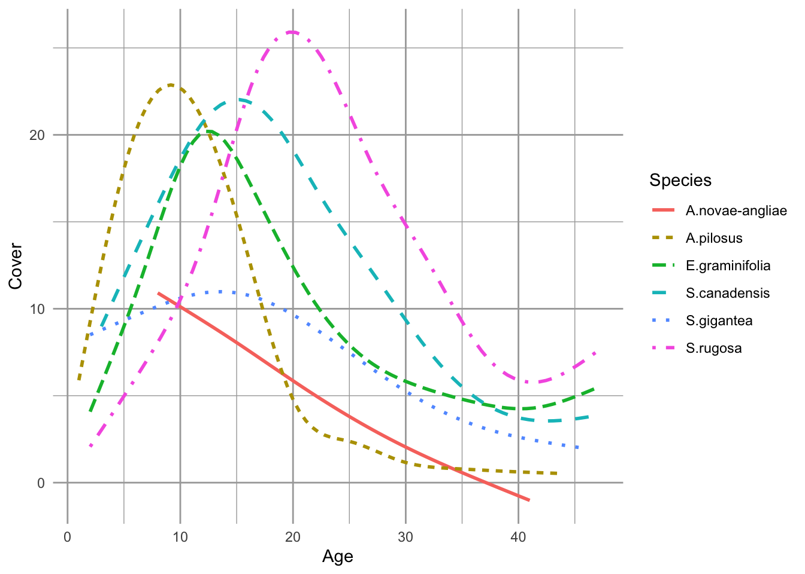
<p class="caption">
Figure 7.1: <em>Changes in abundances of six species of asters during early secondary succession. This turnover of perennial weeds appears mediated by competition for light, among other factors (data from the long-term Buell-Small Succession study [<a href="http://www.ecostudies.org/bss/" class="uri">http://www.ecostudies.org/bss/</a>]).</em>
</p>
</div>
In this chapter we introduce <em>direct</em> and <em>indirect</em> interspecific competition (Fig. <a href="competition.html#fig:DandID">7.2</a>). Direct competition is an interaction in which individuals experience a direct negative effect of another individual through aggressive interaction via contact or signaling. Indirect competition are negative interactions mediated by another factor, such as a limiting resource. When grass species compete for nitrate and ammonium, it is the shortage of those nutrients that causes the negative effects, and that shortage results from their consumption by competing species.
<div class="figure"><span id="fig:DandID"></span>
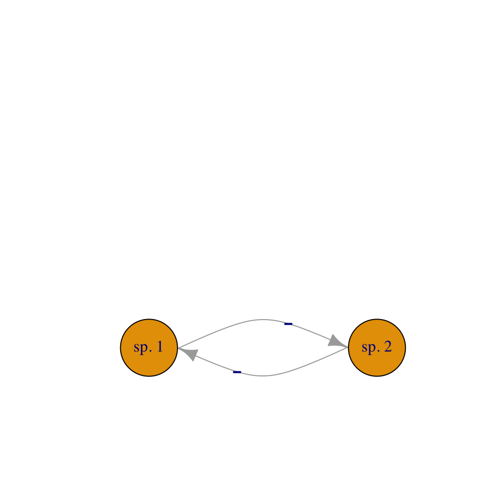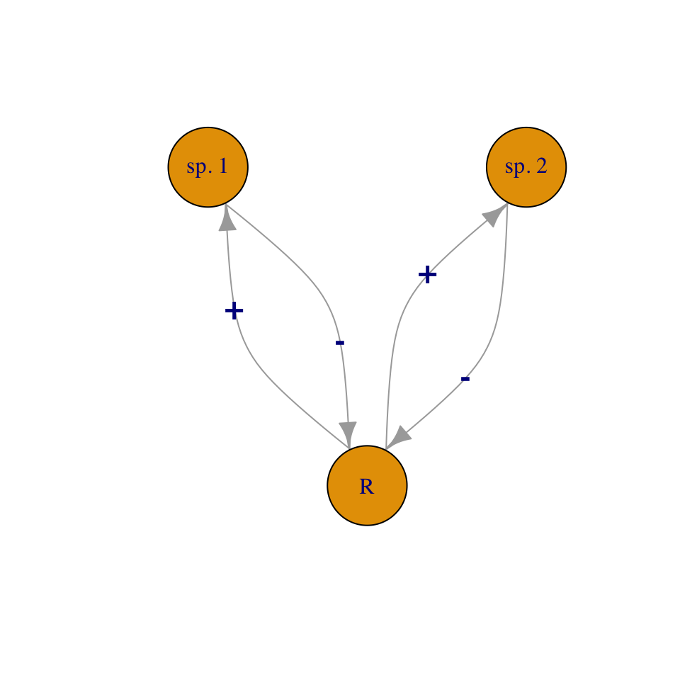
<p class="caption">
Figure 7.2: <em>We can model competition as direct negative effects, or as indirect interactions mediated through a resource.</em>
</p>
</div>
<p>We start with modeling direct interactions using the Lotka-Volterra framework. We then move on to indirect interactions using a consumer-resource model.</p>
<div id="lotka-volterra-interspecific-competition" class="section level2">
<h2><span class="header-section-number">7.1</span> Lotka-Volterra Interspecific Competition</h2>
<p>Our models of density-dependent growth were built upon the assumption that individuals within a single population had negative effects on each other, which we refered to as intraspecific competition. Here we assume that individuals of different species also have negative effects on each other.</p>
<p>The classic model of competitive interactions is the continuous Lotka-Volterra model of interspecific competition <span class="citation">(Kingsland <a href="#ref-Kingsland:1985kx" role="doc-biblioref">1985</a>)</span>. We build directly on the logistic growth model by adding an additional term for negative density dependence, this time, with the competing species. Now we have to label our populations and all of our parameters using subscripts. These subscripts identify the species to which the parameter relates. For instance, <span class="math inline">\(r_1\)</span> is the intrinsic rate of increase for species 1, and <span class="math inline">\(\alpha_{12}\)</span> is the per capita effect of species 2 on 1.
<span class="math display" id="eq:N2b" id="eq:N2a">\[\begin{align}
  \frac{d N_1}{d t}&amp;=r_1N_1\left(1-\alpha_{11}N_1-\alpha_{12}N_2\right)\tag{7.1}\\
  \frac{d N_2}{d t}&amp;=r_2N_2\left(1-\alpha_{21}N_1-\alpha_{22}N_2\right) \tag{7.2}
\end{align}\]</span>
You will notice in <a href="competition.html#eq:N2a">(7.1)</a> that the denisty-dependence term includes the total effect of species 1 on itself (<span class="math inline">\(\alpha_{11}\)</span>) and the total effect of species 2 and species 1 (<span class="math inline">\(\alpha_{12}\)</span>) (Table <a href="competition.html#tab:cc">7.1</a>).</p>
<p>It is useful to understand where these subscripts come from. Why are they read from right to left — why not left to right? As we saw in our models of structured population growth, it comes from the underlying linear algebra used to work with all these equations. We define all of the <span class="math inline">\(\alpha\)</span>’s together as a matrix,
<span class="math display" id="eq:alphD">\[\begin{equation}
  \tag{7.3}
  \mathbf{\alpha} =  \begin{pmatrix}
    \alpha_{11} &amp; \alpha_{12} \\
    \alpha_{21} &amp; \alpha_{22} 
    \end{pmatrix} = 
\begin{pmatrix}
    0.010 &amp; 0.005\\
    0.008 &amp; 0.010 
    \end{pmatrix}
\end{equation}\]</span>
The subscripts on the <span class="math inline">\(\alpha\)</span>s represent the row and column of the
coefficient; <span class="math inline">\(\alpha_{12}\)</span> is in the first row, second column. This merely reflects how mathematicians describe matrix elements and dimensions — row <span class="math inline">\(\times\)</span> column. When we use matrix multiplication, <span class="math inline">\(\alpha_{12}\)</span> becomes the effect of species 2 (column) on species 1 (row). In this case, <span class="math inline">\(\alpha_{11}=\alpha_{22}=0.01\)</span>, <span class="math inline">\(\alpha_{21}=0.008\)</span>, and <span class="math inline">\(\alpha_{12}=0.005\)</span>. Thus, both species have greater effects on themselves than on each other. Remember, the larger the <span class="math inline">\(\alpha\)</span>, the larger the effect.</p>
<table>
<caption>
<span id="tab:cc">Table 7.1: </span>Parameters of the continuous 2 species Lotka-Volterra competition model. The rest of the chapter explains the meaning and motivation.
</caption>
<thead>
<tr>
<th style="text-align:left;">
Parameter
</th>
<th style="text-align:left;">
Description
</th>
</tr>
</thead>
<tbody>
<tr>
<td style="text-align:left;">
<span class="math inline">\(r_i\)</span>
</td>
<td style="text-align:left;">
Instantaneous rate of increase; intrinsic rate of growth; individuals produced per individual per unit time.
</td>
</tr>
<tr>
<td style="text-align:left;">
<span class="math inline">\(\alpha_{ii}\)</span>
</td>
<td style="text-align:left;">
Intraspecific density dependence; intraspecific competition coefficient; the negative effect of an individual of species <span class="math inline">\(i\)</span> on its own growth rate.
</td>
</tr>
<tr>
<td style="text-align:left;">
<span class="math inline">\(\alpha_{ij}\)</span>
</td>
<td style="text-align:left;">
Interspecific density dependence; interspecific competition coefficient; the effect of interspecific competition; the negative effect that an individual of species <span class="math inline">\(j\)</span> has on the growth rate of species <span class="math inline">\(i\)</span>.
</td>
</tr>
<tr>
<td style="text-align:left;">
<span class="math inline">\(K_i\)</span>
</td>
<td style="text-align:left;">
<span class="math inline">\(1/\alpha_{ii}\)</span>; <em>carrying capacity</em> of species <span class="math inline">\(i\)</span>; the population size obtainable by species <span class="math inline">\(i\)</span> in the absence of species <span class="math inline">\(j\)</span>.
</td>
</tr>
<tr>
<td style="text-align:left;">
<span class="math inline">\(\alpha^\prime_{ij}\)</span>
</td>
<td style="text-align:left;">
<span class="math inline">\(\alpha_{ij}/\alpha_{ii}\)</span>; the relative importance of interspecific competition.
</td>
</tr>
<tr>
<td style="text-align:left;">
<span class="math inline">\(\beta_{ij}\)</span>
</td>
<td style="text-align:left;">
<span class="math inline">\(\alpha_{ij}/\alpha_{jj}\)</span>; the <em>invasion criterion</em> for species <span class="math inline">\(i\)</span>; the relative importance of interspecific competition; the importance of the effect of species <span class="math inline">\(j\)</span> on species <span class="math inline">\(i\)</span> relative to the effect of species <span class="math inline">\(j\)</span> on itself.
</td>
</tr>
</tbody>
</table>
<p>These equations are also commonly represented using carrying capacity, <span class="math inline">\(K_i\)</span>, to summarize intraspecific effects on abundance, and coefficients to modify the intraspecific effects quantified with <span class="math inline">\(K_i=1/\alpha_{ii}\)</span>. This representation looks like
<span class="math display" id="eq:K2" id="eq:K1">\[\begin{align}
  \frac{d N_1}{d t}&amp;=r_1N_1\left(\frac{K_1-N_1-\alpha&#39;_{12}N_2}{K_1}\right) \tag{7.4}\\
  \frac{d N_2}{d t}&amp;=r_2N_2\left(\frac{K_2-N_2-\alpha&#39;_{21}N_1}{K_2}\right). \tag{7.5}
\end{align}\]</span>
In this version, <span class="math inline">\(K_1=1/\alpha_{11}\)</span>, and <em>note that <span class="math inline">\(\alpha&#39;_{12}\)</span> differs from <span class="math inline">\(\alpha_{12}\)</span></em>. The <span class="math inline">\(\alpha&#39;_{12}\)</span> in eq. <a href="competition.html#eq:K1">(7.4)</a> merely modifies the effect of <span class="math inline">\(1/K_1\)</span>. It turns out the <span class="math inline">\(\alpha&#39;_{1,2}\)</span> is equal to the <em>ratio</em> of the interspecific and intraspecific per capita effects, or
<span class="math display">\[\begin{align}
  \alpha_{12}&amp;=\frac{\alpha&#39;_{12}}{K_1}\notag\\
\alpha&#39;_{12}&amp;=\frac{\alpha_{12}}{\alpha_{11}}.
\end{align}\]</span>
Another useful measure of the relative importance of interspecific competition is <span class="math inline">\(\beta_{ij}=\alpha_{ij}/\alpha_{jj}\)</span> (see <em>Invasion criteria</em>, below).</p>
</div>
<div id="equilbria" class="section level2">
<h2><span class="header-section-number">7.2</span> Equilbria</h2>
<p>In this section, we describe how we find equilibria in a simple multispecies model, by solving the growth equations for zero, much the way we did in Chapters 3 and 4. We begin with <em>isoclines</em>, and move on to <em>boundary and internal equilibria</em> and <em>invasion criteria</em>.</p>
<div id="isoclines" class="section level3">
<h3><span class="header-section-number">7.2.1</span> Isoclines</h3>
<p>An isocline is, in general, a line connecting points on a graph or map that have equal value. For instance, a topographic map has elevation isoclines, connecting points of equal elevation. Here, our isoclines will connect points in state space at which the growth rate for species <span class="math inline">\(i\)</span> equals zero — every point on that line will represent <span class="math inline">\(\dot{N}_i=0\)</span>. We call these <em>zero net growth isoclines</em> (ZNGI), sometimes called “zingees” by people who prefer an economy of words.</p>
<p>A zero net growth isocline is the set of all points for which the growth of a population is zero, <em>when the population size of a competing species is held constant</em>. A two-species equilibrium is a point at which the growth rates of both populations are zero. We saw previously that the carrying capacity of a single species logistic population is an equilibrium. With two species, it gets a tad trickier.</p>
<p>We find the isocline of a species by setting its growth rate equal to zero and solving the equation for that species in terms of the other species. As an example, find the zero net growth isocline for <span class="math inline">\(N_2\)</span>. We find below that there is a straight line that describes all points for which <span class="math inline">\(d N_2/dt=0\)</span>, if <span class="math inline">\(N_1\)</span> were held constant.</p>
<p>We start by setting <a href="competition.html#eq:N2b">(7.2)</a> to zero, and solving for <span class="math inline">\(N_2\)</span>.
<span class="math display" id="eq:N2iso">\[\begin{align*}
  \frac{d N_2}{d t}&amp;=r_2N_2\left(1-\alpha_{21}N_1-\alpha_{22}N_2\right) \\
  0 &amp;=r_2N_2\left(1-\alpha_{21}N_1-\alpha_{22}N_2\right)\\
  0 &amp;= 1-\alpha_{21}N_1-\alpha_{22}N_2\\
  N_2 &amp;=\frac{1}{\alpha_{22}} - \frac{\alpha_{21}}{\alpha_{22}}N_1 .\tag{7.6}
\end{align*}\]</span>
Recall that the formula for a straight line is <span class="math inline">\(y=mx + b\)</span> where <span class="math inline">\(m\)</span> is
the slope and <span class="math inline">\(b\)</span> is the intercept on the <span class="math inline">\(y\)</span> axis. We can see that the
expression for <span class="math inline">\(N_2\)</span> in <a href="competition.html#eq:N2iso">(7.6)</a> is a straight line, where
<span class="math inline">\(y=N_2\)</span>, <span class="math inline">\(m= \alpha_{21}/\alpha_{22}\)</span>, and <span class="math inline">\(b=1/\alpha_{22}\)</span> (Fig. <a href="competition.html#fig:Niso1">7.3</a>). When <span class="math inline">\(N_1\)</span> is zero, <span class="math inline">\(N_2=1/\alpha_{22}\)</span>. This is precisely what we saw in Chapter 3 (logistic growth), that a single species logistic population has an equilibrium at its carrying capacity, <span class="math inline">\(K=1/\alpha\)</span>.</p>
<p>The isocline (Fig. <a href="competition.html#fig:Niso1">7.3</a>) shows that as the competitor’s population size, <span class="math inline">\(N_1\)</span>, becomes larger, <span class="math inline">\(N_2\)</span> declines by <span class="math inline">\(\alpha_{21}/\alpha_{22}\)</span> for each additional individual of the competing species 1, until finally <span class="math inline">\(N_2=0\)</span> when <span class="math inline">\(N_1=1/\alpha_{21}\)</span>.</p>
<p><strong>Graphing an isocline</strong> isn’t too hard, so let’s graph something similar to Fig. <a href="competition.html#fig:Niso1">7.3</a>. First, we define a new matrix of competition coefficients, where
<span class="math inline">\(\alpha_{11}=\alpha_{22} &gt; \alpha_{12}=\alpha_{21}\)</span>.</p>
<div class="sourceCode" id="cb196"><pre class="sourceCode r"><code class="sourceCode r"><span id="cb196-1"><a href="competition.html#cb196-1"></a>a &lt;-<span class="st"> </span><span class="kw">matrix</span>(<span class="kw">c</span>(  <span class="fl">0.01</span>, <span class="fl">0.005</span>,</span>
<span id="cb196-2"><a href="competition.html#cb196-2"></a>                  <span class="fl">0.005</span>, <span class="fl">0.01</span>), <span class="dt">ncol=</span><span class="dv">2</span>, <span class="dt">byrow=</span><span class="ot">TRUE</span>)</span></code></pre></div>
<p>We create an expression to plot the <span class="math inline">\(N_2\)</span> isocline, as a function of
possible values of <span class="math inline">\(N_1\)</span>.</p>
<div class="sourceCode" id="cb197"><pre class="sourceCode r"><code class="sourceCode r"><span id="cb197-1"><a href="competition.html#cb197-1"></a>N2iso &lt;-<span class="st"> </span><span class="kw">expression</span>(<span class="dv">1</span><span class="op">/</span>a[<span class="dv">2</span>,<span class="dv">2</span>] <span class="op">-</span><span class="st"> </span>(a[<span class="dv">2</span>,<span class="dv">1</span>]<span class="op">/</span>a[<span class="dv">2</span>,<span class="dv">2</span>])<span class="op">*</span>N1)</span></code></pre></div>
<p>We then specify <span class="math inline">\(N_1\)</span>, and then evaluate and plot <span class="math inline">\(N_2\)</span>. We add arrows to remind us of what happens if <span class="math inline">\(N_2\)</span> is above or below the value on the isocline.</p>
<div class="sourceCode" id="cb198"><pre class="sourceCode r"><code class="sourceCode r"><span id="cb198-1"><a href="competition.html#cb198-1"></a>N1 &lt;-<span class="st"> </span><span class="dv">0</span><span class="op">:</span><span class="dv">200</span></span>
<span id="cb198-2"><a href="competition.html#cb198-2"></a><span class="kw">plot</span>(N1, <span class="kw">eval</span>(N2iso), <span class="dt">type=</span><span class="st">&#39;l&#39;</span>,</span>
<span id="cb198-3"><a href="competition.html#cb198-3"></a>      <span class="dt">ylim=</span><span class="kw">c</span>(<span class="dv">0</span>, <span class="dv">200</span>), <span class="dt">xlim=</span><span class="kw">c</span>(<span class="dv">0</span>, <span class="dv">200</span>),</span>
<span id="cb198-4"><a href="competition.html#cb198-4"></a>      <span class="dt">ylab=</span><span class="kw">expression</span>(<span class="st">&quot;N&quot;</span>[<span class="dv">2</span>]))</span>
<span id="cb198-5"><a href="competition.html#cb198-5"></a><span class="kw">arrows</span>(<span class="dt">x0=</span><span class="dv">90</span>, <span class="dt">y0=</span><span class="dv">150</span>, <span class="dt">x1=</span><span class="dv">90</span>, <span class="dt">y1=</span><span class="dv">80</span>, <span class="dt">length=</span><span class="fl">0.1</span>)</span>
<span id="cb198-6"><a href="competition.html#cb198-6"></a><span class="kw">arrows</span>(<span class="dt">x0=</span><span class="dv">75</span>, <span class="dt">y0=</span><span class="dv">0</span>, <span class="dt">x1=</span><span class="dv">75</span>, <span class="dt">y1=</span><span class="dv">50</span>, <span class="dt">length=</span><span class="fl">0.1</span>)</span></code></pre></div>
<p>The isocline for <span class="math inline">\(N_2\)</span> (Fig. <a href="competition.html#fig:Niso1">7.3</a>) is the line at which
<span class="math inline">\(d N_2/d t =0\)</span> <em>for a fixed value of <span class="math inline">\(N_1\)</span></em>. Just as in the
single species logistic growth model, if <span class="math inline">\(N_2\)</span> exceeds its
equilibrium, it declines, and if <span class="math inline">\(N_2\)</span> is less than its equilibrium,
it grows. The isocline (Fig. <a href="competition.html#fig:Niso1">7.3</a> is the set of balance points between positive and negative growth. This is reflected in the arrows in Fig. <a href="competition.html#fig:Niso1">7.3</a> — if the <span class="math inline">\(N_2\)</span> is ever above this isocline, it declines and if it is ever below this isocline, it rises. This isocline shows that whether <span class="math inline">\(N_2\)</span> increases or decreases depends on <span class="math inline">\(N_1\)</span>.</p>
<div class="figure"><span id="fig:Niso1"></span>
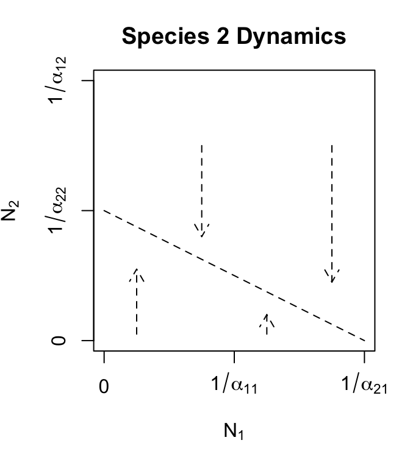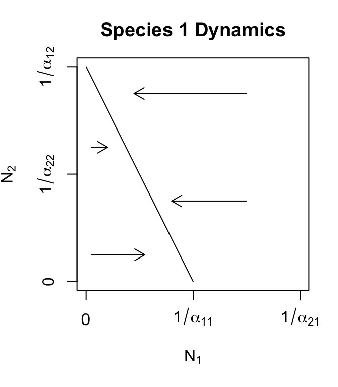
<p class="caption">
Figure 7.3: <em>Phase plane plots of each of the two competing species, with Lotka-Volterra zero growth isoclines. Arrows indicate population trajectories. Recall <span class="math inline">\(K = 1/alpha\)</span>.</em>
</p>
</div>
<p>By analogy, the isocline for species 1 turns out to be
<span class="math display" id="eq:N1iso">\[\begin{align}
  N_1 &amp;=\frac{1}{\alpha_{11}} - \frac{\alpha_{12}}{\alpha_{11}}N_2. \tag{7.7}
\end{align}\]</span></p>
<p>Note that these isoclines are merely equations for straight lines, and it is easy to do nonsensical things, such as specify coefficients that result in negative population sizes. Therefore, let us proceed with some thoughtfulness and care.</p>
</div>
<div id="finding-equilibria" class="section level3">
<h3><span class="header-section-number">7.2.2</span> Finding equilibria</h3>
<p>By themselves, the isoclines tell us that if species 2 becomes extinct (<span class="math inline">\(N_2=0\)</span>), then species 1 reaches its carrying capacity (<span class="math inline">\(N_1=1/\alpha_{11}\)</span>) (Fig. <a href="competition.html#fig:Niso1">7.3</a>). Similarly, if <span class="math inline">\(N_1=0\)</span>, then <span class="math inline">\(N_2=1/\alpha_{22}\)</span>. These are important equilibria, because they verify the internal consistency of our logical, and they provide end-points on our isoclines.</p>
<p><em>If the species coexist (<span class="math inline">\(N_1,\,N_2 &gt;0\)</span>) it means that they must share one or more points on their isoclines</em> — such an equilibrium is the point
where the lines cross. We find these equilibria by solving the isoclines simultaneously. A simple way to do this is to substitute the right hand side of the <span class="math inline">\(N_2\)</span> isocline <a href="competition.html#eq:N2iso">(7.6)</a> in for <span class="math inline">\(N_2\)</span> in the <span class="math inline">\(N_1\)</span> isocline <a href="competition.html#eq:N1iso">(7.7)</a>. That is, we substitute an isocline of one species in for that species’ abundance in another species’ isocline. Combining eqs. <a href="competition.html#eq:N2iso">(7.6)</a> and <a href="competition.html#eq:N1iso">(7.7)</a>, we get
<span class="math display" id="eq:lvn1eq">\[\begin{align}
  N_1 &amp;=\frac{1}{\alpha_{11}} - \frac{\alpha_{12}}{\alpha_{11}}\left(\frac{1}{\alpha_{22}} - \frac{\alpha_{21}}{\alpha_{22}}N_1 \right)\notag\\
  N_1 &amp;=\frac{1}{\alpha_{11}} - 
  \frac{\alpha_{12}}{\alpha_{11}\alpha_{22}}+
  \frac{\alpha_{12}\alpha_{21}}{\alpha_{11}\alpha_{22}}N_1 \notag\\
  N_1\left(1-\frac{\alpha_{12}\alpha_{21}}{\alpha_{11}\alpha_{22}}\right)&amp;=
  \frac{\alpha_{22}-\alpha_{12}}{\alpha_{11}\alpha_{22}} \notag\\
  N_1^*&amp;=\frac{\alpha_{22}-\alpha_{12}}{\alpha_{11}\alpha_{22}-\alpha_{12}\alpha_{21}} \tag{7.8}
\end{align}\]</span>
When we do this for <span class="math inline">\(N_2\)</span>, we get
<span class="math display" id="eq:lvn2eq">\[\begin{align}
  N_2^*&amp;=\frac{\alpha_{11}-\alpha_{21}}{\alpha_{22}\alpha_{11}-\alpha_{12}\alpha_{21}}\tag{7.9}
\end{align}\]</span></p>
<p>We now have the values for <span class="math inline">\(N_1^*\)</span> and <span class="math inline">\(N_2^*\)</span> at the point at which their isoclines cross (Fig. <a href="competition.html#fig:LVIsoclines">7.4</a>, upper left). These equilibria apply only when isoclines cross within feasible state space.</p>
<p>The expressions for <span class="math inline">\(N_1^*\)</span> and <span class="math inline">\(N_2^*\)</span> look pretty complicated, but can we use them to discern an intuitive understanding for species 1? First, we see that <span class="math inline">\(r_i\)</span> is not in the expressions for the equilibria — they do not depend on <span class="math inline">\(r_i\)</span> in this two-species model. Second, we can confirm that as interspecific competition intensity falls to zero (<span class="math inline">\(\alpha_{12}=\alpha_{21}=0\)</span>), each species reaches its own carrying capacity. That is, when putative competitors occupy sufficiently different niches and no longer compete, then they both reach their own carrying capacities.</p>
<p>We can also say something a little less obvious about species 1. What happens when the negative effect of the competitor, <span class="math inline">\(N_2\)</span>, starts to increase, that is, as <span class="math inline">\(\alpha_{12}\)</span> gets bigger? Or, put more obtusely but precisely, let’s find
<span class="math display">\[\begin{equation}
  \label{eq:1}
  N_1^* = \lim_{\alpha_{12} \to \infty}\frac{\alpha_{22}-\alpha_{12}}{\alpha_{22}\alpha_{11}-\alpha_{12}\alpha_{21}}
\end{equation}\]</span>
that is, find the limit of the equilibrium <a href="competition.html#eq:lvn1eq">(7.8)</a> as
<span class="math inline">\(\alpha_{12}\)</span> gets very large. Well, the <span class="math inline">\(\alpha_{ii}\)</span> become
effectively zero because <span class="math inline">\(\alpha_{12}\)</span> gets so big. This leaves
<span class="math inline">\(-\alpha_{12}/(-\alpha_{12}\alpha_{21})=1/\alpha_{21}\)</span>. Huh? This
means simply that as the negative effect of the competitor increases,
the abundance of species 1 becomes increasingly dependent upon
<span class="math inline">\(\alpha_{21}\)</span>, its negative effect on its competitor. Thus we have an
arms race: as the negative effect of its competitor increases, the
abundance of a species depends increasingly on its ability to suppress
the competitor.</p>
<p>Summarizing, we see that in the absence of interspecific competition, species are attracted toward their carrying capacities. Second, if interspecific competition is intense, then a species’ carrying capacity becomes less important, and its abundance is increasingly determined by its ability to suppress its competitor.</p>
</div>
<div id="coexistence-the-invasion-criterion" class="section level3">
<h3><span class="header-section-number">7.2.3</span> Coexistence — the invasion criterion</h3>
<p>Based on the numerators in eqs. <a href="competition.html#eq:lvn1eq">(7.8)</a> and <a href="competition.html#eq:lvn2eq">(7.9)</a>, it seems that <span class="math inline">\(N_1^*\)</span> and <span class="math inline">\(N_2^*\)</span> may both be greater than zero whenever <span class="math inline">\(\alpha_{ii}-\alpha_{ji} &gt;0\)</span>. This is, indeed, the case. Below we step through the analysis of what we refer to as the “invasion criterion,” which specifies the conditions for <span class="math inline">\(N_i^* &gt; 0\)</span>.</p>
<p>In general, the details of any model and its dynamics may be quite complicated, but as long as we know whether a species will always <em>increase when it is rare</em>, or <em>invade</em>,<a href="#fn43" class="footnote-ref" id="fnref43"><sup>43</sup></a> then we know whether it can persist in the face of complex interactions. Thus we don’t need to find its equilibrium, but merely its behavior near zero.</p>
<p>How do we determine whether a species can increase when rare? Let’s explore that with the Lotka-Volterra competition model. We can start letting species 1’s growth equation <a href="competition.html#eq:N2a">(7.1)</a> be greater than zero.
<span class="math display" id="eq:coex1">\[\begin{equation*}
  \tag{7.10}
  0 &lt; r_1N_1\left(1-\alpha_{11}N_1-\alpha_{12}N_2\right).
\end{equation*}\]</span>
From this we can see that in the absence of any density dependence (<span class="math inline">\(\alpha=0\)</span>) and assuming <span class="math inline">\(r_1&gt;0\)</span>, and <span class="math inline">\(N_1&gt;0\)</span>, the population grows exponentially. Further, we can see that <span class="math inline">\(d N/d t &gt;0\)</span> as long as <span class="math inline">\(\left(1-\alpha_{11}N_1-\alpha_{12}N_2\right)&gt;0\)</span>.</p>
<p><strong>To determine whether <span class="math inline">\(N_1\)</span> can increase when rare</strong> we want to figure out what happens when <span class="math inline">\(N_1\)</span> gets very close to zero. We start by expressing <span class="math inline">\(d N_1 / d t\)</span> completely in terms of <span class="math inline">\(N_1\)</span> and <span class="math inline">\(\alpha\)</span>. We do this by substituting <span class="math inline">\(N_2\)</span>’s isocline <a href="competition.html#eq:N2iso">(7.6)</a> in place of <span class="math inline">\(N_2\)</span> in <a href="competition.html#eq:N2a">(7.1)</a>. We then solve this for any growth greater than zero.
<span class="math display" id="eq:N1crit1">\[\begin{align}
 0&amp;&lt; \left(1-\alpha_{11}N_1-\alpha_{12}N_2\right)\notag\\
 0&amp;&lt;\left(1-\alpha_{11}N_1-\alpha_{12}\left(\frac{1}{\alpha_{22}}-\frac{\alpha_{21}}{\alpha_{22}}N_1\right)\right)
\tag{7.11}
\end{align}\]</span></p>
<p>Now — what is the value of <a href="competition.html#eq:N1crit1">(7.11)</a> as <span class="math inline">\(N_1 \to 0\)</span>? We can substitute 0 for <span class="math inline">\(N_1\)</span>, and <a href="competition.html#eq:N1crit1">(7.11)</a> becomes
<span class="math display">\[\begin{align}
 0&amp;&lt;\left(1-\alpha_{12}\left(\frac{1}{\alpha_{22}}\right)\right) \notag\\
 0&amp;&lt;1-\frac{\alpha_{12}}{\alpha_{22}}\notag\\
\alpha_{12}&amp;&lt;{\alpha_{22}}.
\end{align}\]</span>
What is this saying? It is saying that as long as <span class="math inline">\(\alpha_{12}&lt;\alpha_{22}\)</span>, then our focal species can persist, increasing in abundance from near zero — <span class="math inline">\(N_1\)</span> will increase when rare, that is, it will successfully invade.</p>
<p>For two species to both persist, or coexist, it must be that case that
<span class="math display" id="eq:N1criterion">\[\begin{equation*}
\alpha_{12}&lt;\alpha_{22} \quad , \quad \alpha_{21}&lt;\alpha_{11} .
\tag{7.12}
\end{equation*}\]</span></p>
<p>Simply put, <em>for species to coexist stably, their effects on themselves must be greater than their effects on each other</em> (Fig. <a href="competition.html#fig:LVIsoclines">7.4</a>, upper left).</p>
</div>
<div id="other-equilibria" class="section level3">
<h3><span class="header-section-number">7.2.4</span> Other equilibria</h3>
<p>Given our isoclines and equilibria above, what other logical combinations might we see, other than coexistence? Here we list others, and provide graphical interpretations (Fig. <a href="competition.html#fig:LVIsoclines">7.4</a>).</p>
<p><strong>Species 1 can invade when rare, but species 2 cannot (Fig. <a href="competition.html#fig:LVIsoclines">7.4</a>, lower left)</strong>
<span class="math display">\[\begin{equation*}
\alpha_{12} &lt; \alpha_{22} \quad,\quad \alpha_{21}&gt;\alpha_{11} 
\end{equation*}\]</span>
This leads to competitive exclusion by species 1 — species 1 wins. This is referred to as a <em>boundary equilibrium</em>, because it is on the boundary of the state space for one species. Equilibria where all <span class="math inline">\(N_i&gt;0\)</span> are referred to as <em>internal equilibria</em>.</p>
<p><strong>Species 2 can invade when rare, but species 1 cannot (Fig. <a href="competition.html#fig:LVIsoclines">7.4</a>, upper right)</strong>
<span class="math display">\[\begin{equation*}
\alpha_{12}&gt;\alpha_{22} \quad,\quad \alpha_{21}&lt;\alpha_{11} 
\end{equation*}\]</span>
This leads to competitive exclusion by species 2 — species 2 wins. This is the other boundary equilibrium. Note that for both this and the previous boundary equilibrium, the equilibrium equations, <a href="competition.html#eq:lvn1eq">(7.8)</a> &amp; <a href="competition.html#eq:lvn2eq">(7.9)</a>, can return <span class="math inline">\(N^*\)</span> that are negative or too large (<span class="math inline">\(&gt;K\)</span>). Recall that these equations derive from simple equations of straight lines, and do not guarantee that they are used sensibly — equations aren’t dangerous, theoreticians who misuse equations are dangerous.</p>
<p><strong>Neither species can invade when rare (Fig. <a href="competition.html#fig:LVIsoclines">7.4</a>, lower right).</strong></p>
<p><span class="math display">\[\begin{equation*}
\alpha_{12} &gt; \alpha_{22} \quad,\quad \alpha_{21} &gt; \alpha_{11}
\end{equation*}\]</span></p>
<p>This creates an unstable internal equilibrium—exclusion will occur, but either species could win. This condition is sometimes referred to as <em>founder control</em> <span class="citation">(Bolker, Pacala, and Neuhauser <a href="#ref-Bolker2003a" role="doc-biblioref">2003</a>)</span> because the identity of the winner depends in part on the starting abundances. It creates a <em>saddle</em> in state space. What the heck is a saddle? More on that below. It suffices to say that from some directions, an saddle attracts the trajectories of the populations, while from other directions, it repels the trajectories.<a href="#fn44" class="footnote-ref" id="fnref44"><sup>44</sup></a></p>
<div class="figure"><span id="fig:LVIsoclines"></span>

<p class="caption">
Figure 7.4: <em>Phase plane diagrams of Lotka-Volterra competitors under different invasion conditions. Horizontal and vertical arrows indicate directions of attraction and repulsion for each population (solid and dased arrows); diagonal arrows indicate combined trajectory. Circles indicate equilibria; additional boundary equilibria can occur whenever one species is zero. Left to right: stable eq., <span class="math inline">\(a_{ji} &lt; a_{ii}\)</span>; <span class="math inline">\(N_2\)</span> wins, <span class="math inline">\(a_{12} &gt; a_{22}\)</span>; <span class="math inline">\(N_1\)</span> wins, $a_{21} &gt; a_{11}; saddle attractor-repellor, <span class="math inline">\(a_{ji} &gt; a_{ii}\)</span>.</em>
</p>
</div>
</div>
</div>
<div id="dynamics-at-the-equilibria" class="section level2">
<h2><span class="header-section-number">7.3</span> Dynamics at the Equilibria</h2>
<p>Here we use eigenanalysis to analyze the properties of the equilibrium, whether they are attractors, repellers, or both, and whether the system oscillates around these equilibria.</p>
<p>For logistic growth, we assessed stability with the partial derivative of the growth rate, with respect to population size. If it was negative the population was stable, and the more negative the value, the shorter the return time. Here we build on this, and present a general recipe for stability analysis <span class="citation">(Morin <a href="#ref-Morin1999a" role="doc-biblioref">1999</a>)</span>:</p>
<ol style="list-style-type: decimal">
<li>Determine the equilibrium abundances of each species by setting its growth equation to zero, and solving for <span class="math inline">\(N\)</span>.</li>
<li>Create the Jacobian matrix. This matrix represents the response of each species to changes in its own population and to changes in each other’s populations. The matrix elements are the partial derivatives of each species’ growth rate with respect to each population.</li>
<li>Solve the Jacobian. Substitute the equilibrium abundances into the partial derivatives of the Jacobian matrix to put a real number into each element of the Jacobian matrix.</li>
<li>Use the Jacobian matrix to find the behavior of the system near the equilibria. The trace, determinant, and eigenvalues of the Jacobian can tell us how stable or unstable the system is, and whether and how it cycles.</li>
</ol>
<div id="determine-the-equilibria" class="section level3">
<h3><span class="header-section-number">7.3.1</span> Determine the equilibria</h3>
<p>We just did this above. Given <a href="competition.html#eq:lvn1eq">(7.8)</a> and <a href="competition.html#eq:lvn2eq">(7.9)</a>, we see that the <strong><span class="math inline">\(\alpha\)</span></strong> determine completely <span class="math inline">\(N_1^*\)</span> and <span class="math inline">\(N_2^*\)</span>. This is not true for Lotka-Volterra systems with more than two species; such systems also depend on <span class="math inline">\(r_i\)</span>.</p>
<p><strong>Finding equilibria in R</strong> can be done using <em>expressions</em> for the equilibria, <span class="math inline">\(N_1^*\)</span> and <span class="math inline">\(N_2^*\)</span>. An R expression is a symbolic representation of an equation. These will be symbolic representations that we later evaluate using <code>eval()</code>.</p>
<div class="sourceCode" id="cb199"><pre class="sourceCode r"><code class="sourceCode r"><span id="cb199-1"><a href="competition.html#cb199-1"></a>N1Star &lt;-<span class="st"> </span><span class="kw">expression</span>( (a22<span class="op">-</span>a12)<span class="op">/</span>(a22<span class="op">*</span>a11 <span class="op">-</span><span class="st"> </span>a12<span class="op">*</span>a21) )</span>
<span id="cb199-2"><a href="competition.html#cb199-2"></a>N2Star &lt;-<span class="st"> </span><span class="kw">expression</span>( (a11<span class="op">-</span>a21)<span class="op">/</span>(a22<span class="op">*</span>a11 <span class="op">-</span><span class="st"> </span>a12<span class="op">*</span>a21) )</span></code></pre></div>
<p>Next we create the <span class="math inline">\(\mathbf{\alpha}\)</span> and evaluate our expressions.</p>
<div class="sourceCode" id="cb200"><pre class="sourceCode r"><code class="sourceCode r"><span id="cb200-1"><a href="competition.html#cb200-1"></a>a11 &lt;-<span class="st"> </span>a22 &lt;-<span class="st"> </span><span class="fl">0.01</span>;  a12 &lt;-<span class="st"> </span><span class="fl">0.001</span>; a21 &lt;-<span class="st"> </span><span class="fl">0.001</span></span>
<span id="cb200-2"><a href="competition.html#cb200-2"></a>N1 &lt;-<span class="st"> </span><span class="kw">eval</span>(N1Star); N2 &lt;-<span class="st"> </span><span class="kw">eval</span>(N2Star)</span>
<span id="cb200-3"><a href="competition.html#cb200-3"></a>N1</span></code></pre></div>
<pre><code>## [1] 90.90909</code></pre>
</div>
<div id="create-the-jacobian-matrix" class="section level3">
<h3><span class="header-section-number">7.3.2</span> Create the Jacobian matrix</h3>
<p>The next step is to find each partial derivative. The partial derivatives describe how the growth rate of each species changes with respect to the abundance of each other species and with respect to its own abundance. Thus a positive value indicates that a growth rate increases as another population increases. This might be the case with predator growth rate and its prey population. A negative value indicates a growth rate decreases as another population increases. This is likely to be true for competitors or prey growth rate and its predator population.</p>
<p>Here, we work through an example, deriving the partial derivative of species 1’s growth rate with respect to itself.</p>
<p>First let’s expand the growth rate of species 1 <a href="competition.html#eq:N2a">(7.1)</a><a href="#fn45" class="footnote-ref" id="fnref45"><sup>45</sup></a>
<span class="math display">\[\begin{align}
  \frac{d N_1}{d t}&amp;=\dot{N_1} =r_1N_1 - r_1\alpha_{11}N_1^2 - r_1\alpha_{12}N_2N_1.
\end{align}\]</span></p>
<p>Now we derive the partial differential equation (PDE)<a href="#fn46" class="footnote-ref" id="fnref46"><sup>46</sup></a> with respect to <span class="math inline">\(N_1\)</span>, treating <span class="math inline">\(N_2\)</span> as a constant.
<span class="math display">\[\begin{equation}
  \frac{\partial \dot{N_1} }{\partial N_1}=r_1 - 2r_1\alpha_{11}N_1 - r_1\alpha_{12}N_2
\end{equation}\]</span>
We should think of this as the per capita effect of species 1 on its growth rate.</p>
<p>To derive the PDE with respect to <span class="math inline">\(N_2\)</span>, we treat <span class="math inline">\(N_1\)</span> as a constant, and find
<span class="math display">\[\begin{equation}
  \frac{\partial \dot{N_1} }{\partial N_2}= - r_1\alpha_{12}N_1.
  \end{equation}\]</span>
This is the per capita effect of species 2 on species 1’s growth rate.</p>
<p>We then do the same for <span class="math inline">\(\dot{N_2}\)</span>, and so derive the full matrix of PDE’s,
<span class="math display" id="eq:Jac5">\[\begin{align}
  \tag{7.13}
\left(
\begin {array}{cc}
\frac{\partial \dot{N_1}}{\partial N_1}&amp;\frac{\partial \dot{N_1}}{\partial N_2}\\
\frac{\partial \dot{N_2} }{\partial N_1}&amp;\frac{\partial \dot{N_2}}{\partial N_2}
\end {array}
\right)  =
\left(
\begin {array}{cc}
r_1 - 2r_1\alpha_{11}N_1 - r_1\alpha_{12}N_2&amp; - r_1\alpha_{12}N_1\\
- r_2\alpha_{21}N_2&amp;r_2 - 2r_2\alpha_{22}N_2 - r_2\alpha_{21}N_1\\
\end {array}
\right).
\end{align}\]</span></p>
<p>This matrix of PDEs is the Jacobian matrix, or simply the “Jacobian.” As differential equations, they describe the slopes of curves (i.e. the slopes of tangents of curves) at a particular point. That is, they describe the straight line interpretations as that point. As <em>partial</em> differential equations, they describe how the growth rates change as population sizes change.</p>
<p><strong>Finding partial differential equations and the Jacobian matrix in R</strong> can be done using expressions. Here we create equations or <em>expressions</em> for the for the growth rates, <span class="math inline">\(\dot{N_1}\)</span> and <span class="math inline">\(\dot{N_2}\)</span>, and use these to find the partial derivatives. First, expressions for the growth rates:</p>
<div class="sourceCode" id="cb202"><pre class="sourceCode r"><code class="sourceCode r"><span id="cb202-1"><a href="competition.html#cb202-1"></a>dN1dt &lt;-<span class="st"> </span><span class="kw">expression</span>( r1 <span class="op">*</span><span class="st"> </span>N1 <span class="op">-</span><span class="st"> </span>r1 <span class="op">*</span><span class="st"> </span>a11 <span class="op">*</span><span class="st"> </span>N1<span class="op">^</span><span class="dv">2</span> <span class="op">-</span><span class="st"> </span>r1 <span class="op">*</span><span class="st"> </span>a12 <span class="op">*</span><span class="st"> </span>N1 <span class="op">*</span><span class="st"> </span>N2 )</span>
<span id="cb202-2"><a href="competition.html#cb202-2"></a>dN2dt &lt;-<span class="st"> </span><span class="kw">expression</span>(r2<span class="op">*</span>N2 <span class="op">-</span><span class="st"> </span>r2<span class="op">*</span>a22<span class="op">*</span>N2<span class="op">^</span><span class="dv">2</span> <span class="op">-</span><span class="st"> </span>r2<span class="op">*</span>a21<span class="op">*</span>N1<span class="op">*</span>N2)</span></code></pre></div>
<p>Next, we use each expression for <span class="math inline">\(\dot{N}\)</span> to get each the partial derivatives with respect to each population size. Here we use the R function <code>D()</code> (see also <code>?deriv</code>). We reveal here the result for the first one only, the partial derivative of <span class="math inline">\(\dot{N_1}\)</span> with respect to itself, and then get the others.</p>
<div class="sourceCode" id="cb203"><pre class="sourceCode r"><code class="sourceCode r"><span id="cb203-1"><a href="competition.html#cb203-1"></a>ddN1dN1 &lt;-<span class="kw">D</span>(dN1dt, <span class="st">&quot;N1&quot;</span>)</span>
<span id="cb203-2"><a href="competition.html#cb203-2"></a>ddN1dN1</span></code></pre></div>
<pre><code>## r1 - r1 * a11 * (2 * N1) - r1 * a12 * N2</code></pre>
<p>Here we find the remaining PDEs.</p>
<div class="sourceCode" id="cb205"><pre class="sourceCode r"><code class="sourceCode r"><span id="cb205-1"><a href="competition.html#cb205-1"></a>ddN1dN2 &lt;-<span class="st"> </span><span class="kw">D</span>(dN1dt, <span class="st">&quot;N2&quot;</span>)</span>
<span id="cb205-2"><a href="competition.html#cb205-2"></a>ddN2dN1 &lt;-<span class="st"> </span><span class="kw">D</span>(dN2dt, <span class="st">&quot;N1&quot;</span>)</span>
<span id="cb205-3"><a href="competition.html#cb205-3"></a>ddN2dN2 &lt;-<span class="st"> </span><span class="kw">D</span>(dN2dt, <span class="st">&quot;N2&quot;</span>)</span></code></pre></div>
<p>Last we put these together to create the Jacobian matrix, which is itself an expression that we can evaluate again and again.</p>
<div class="sourceCode" id="cb206"><pre class="sourceCode r"><code class="sourceCode r"><span id="cb206-1"><a href="competition.html#cb206-1"></a>J &lt;-<span class="st"> </span><span class="kw">expression</span>( <span class="kw">matrix</span>(<span class="kw">c</span>(<span class="kw">eval</span>(ddN1dN1), <span class="kw">eval</span>(ddN1dN2),</span>
<span id="cb206-2"><a href="competition.html#cb206-2"></a>                     <span class="kw">eval</span>(ddN2dN1), <span class="kw">eval</span>(ddN2dN2)),</span>
<span id="cb206-3"><a href="competition.html#cb206-3"></a>                   <span class="dt">nrow=</span><span class="dv">2</span>, <span class="dt">byrow=</span><span class="ot">TRUE</span>) )</span></code></pre></div>
</div>
<div id="solve-the-jacobian-at-an-equilibrium" class="section level3">
<h3><span class="header-section-number">7.3.3</span> Solve the Jacobian at an equilibrium</h3>
<p>To solve the Jacobian at an equilibrium, we substitute <span class="math inline">\(N_1^*\)</span> <a href="competition.html#eq:lvn1eq">(7.8)</a> and <span class="math inline">\(N_2^*\)</span> <a href="competition.html#eq:lvn2eq">(7.9)</a> into the Jacobian matrix <a href="competition.html#eq:Jac5">(7.13)</a>. Refer to those equations now. What is the value of <span class="math inline">\(N_1\)</span> in terms of <span class="math inline">\(\alpha_{ii}\)</span> and <span class="math inline">\(\alpha_{ij}\)</span>? Take that value and stick it in each element of the Jacobian <a href="competition.html#eq:jac">(7.14)</a>. Repeat for <span class="math inline">\(N_2\)</span>. When we do this, and rearrange, we get,
<span class="math display" id="eq:jac">\[\begin{align}
  \mathbf{J}=
\left(
\begin {array}{cc}
-r_1\alpha_{11}\left(\frac{\alpha_{22}-\alpha_{12}}{\alpha_{11}\alpha_{22}-\alpha_{12}\alpha_{21}}\right)&amp; - r_1\alpha_{12}\left(\frac{\alpha_{22}-\alpha_{12}}{\alpha_{11}\alpha_{22}-\alpha_{12}\alpha_{21}}\right)\\
- r_2\alpha_{21} \left(\frac{\alpha_{11}-\alpha_{21}}{\alpha_{11}\alpha_{22}-\alpha_{12}\alpha_{21}}\right)&amp;
-r_2\alpha_{22}\left(\frac{\alpha_{11}-\alpha_{21}}{\alpha_{11}\alpha_{22}-\alpha_{12}\alpha_{21}}\right)\\
\end {array}
\right). \tag{7.14}
\end{align}\]</span></p>
<p>Yikes <span class="math inline">\(\ldots\)</span> seems a little intimidating for such a small number of species. However, it is remarkable how each element can be expressed as a product of <span class="math inline">\(-r_i\alpha_{ij}N_i^*\)</span>, where <span class="math inline">\(i\)</span> refers to row, and <span class="math inline">\(j\)</span> refers to column.</p>
<p><strong>Evaluating the Jacobian matrix in R</strong> is the easy part, if we defined it as above.
Assuming that above we selected particular <span class="math inline">\(\mathbf{\alpha}\)</span>, used these to determine <span class="math inline">\(N_1^*\)</span> and <span class="math inline">\(N_2^*\)</span>, found the PDEs and created an expression for the Jacobian matrix, and labeled everything appropriately, we can then evaluate the Jacobian at an equilibrium. For <span class="math inline">\(\alpha_{ii}=0.01\)</span> and <span class="math inline">\(\alpha_{ij}=0.001\)</span> (see above) we find</p>
<div class="sourceCode" id="cb207"><pre class="sourceCode r"><code class="sourceCode r"><span id="cb207-1"><a href="competition.html#cb207-1"></a>r1 &lt;-<span class="st"> </span>r2 &lt;-<span class="st"> </span><span class="dv">1</span></span>
<span id="cb207-2"><a href="competition.html#cb207-2"></a>J1 &lt;-<span class="st"> </span><span class="kw">eval</span>(J)</span>
<span id="cb207-3"><a href="competition.html#cb207-3"></a>J1</span></code></pre></div>
<pre><code>##             [,1]        [,2]
## [1,] -0.90909091 -0.09090909
## [2,] -0.09090909 -0.90909091</code></pre>
<p>Note that all of these PDEs are negative for this equilibrium. This indicates a stable equilibrium, because it means that each population’s growth rate slows in response to an increase in any other.</p>
</div>
<div id="use-the-jacobian-matrix" class="section level3">
<h3><span class="header-section-number">7.3.4</span> Use the Jacobian matrix</h3>
<p>Just the way we used eigenanalysis to understand long term asymptotic behavior of demographic matrices, we can use eigenanalysis of the Jacobian to assess the long-term asymptotic behavior of these competing Lotka-Volterra populations. We can again focus on its dominant, or leading, eigenvalue (<span class="math inline">\(\lambda_1\)</span>). The dominant eigenvalue will be the eigenvalue with the greatest real part, and not necessarily the eigenvalue with the greatest magnitude.<a href="#fn47" class="footnote-ref" id="fnref47"><sup>47</sup></a> In particular, the dominant eigenvalue, <span class="math inline">\(\lambda_1\)</span>, may have a real part for which the magnitude<a href="#fn48" class="footnote-ref" id="fnref48"><sup>48</sup></a> is smaller, but which is less negative or more positive (e.g., <span class="math inline">\(\lambda_1=-.01\)</span>, <span class="math inline">\(\lambda_2=-1.0\)</span>). For continuous models, the dominant eigenvalue, <span class="math inline">\(\lambda_1\)</span>, is approximately the rate of change of a perturbation, <span class="math inline">\(x\)</span>, from an equilibrium,
<span class="math display" id="eq:2x">\[\begin{equation}
  \tag{7.15}
  x_t=x_0e^{\lambda_{1}t}.
\end{equation}\]</span>
Thus, the more negative the value, the faster the exponential decline back toward the equilibrium (i.e., toward <span class="math inline">\(x=0\)</span>). As we did for logistic growth, we should think of the dominant eigenvalue as a “perturbation growth rate”: negative values mean a decline of the perturbation, and positive values indicate an increase in the perturbation, causing the system to diverge or be repelled away from the equilibrium.</p>
<p>In addition to the dominant eigenvalue, we need to consider the other eigenvalues. Table <a href="competition.html#tab:eiginterpret">7.2</a> provides a summary for interpreting eigenvalues with respect to the dynamics of the system. The eigenvalues depend upon elements of the Jacobian, and values calculated from the elements, notably the determinant, the trace, and the discriminant; a similar set of rules of system behavior can be based upon these values <span class="citation">(Roughgarden <a href="#ref-Roughgarden1998" role="doc-biblioref">1998</a>)</span>. For instance, the <em>Routh-Hurwitz criterion</em> for stability tells us that a two-species equilibrium will be locally stable, only if <span class="math inline">\(\mathbf{J_{11}} + \mathbf{J_{22}} &lt; 0\)</span> and if <span class="math inline">\(\mathbf{J_{11}}\mathbf{J_{22}-\mathbf{J_{12}}\mathbf{J_{21}}} &gt; 0\)</span>. The biological interpretation of this criterion will be posed as a problem at the end of the chapter. For now, Table <a href="competition.html#tab:eiginterpret">7.2</a> will suffice.</p>
<table class=" lightable-classic" style='font-family: "Arial Narrow", "Source Sans Pro", sans-serif; width: auto !important; margin-left: auto; margin-right: auto;'>
<caption>
<span id="tab:eiginterpret">Table 7.2: </span>Interpreting eigenvalues of a Jacobian matrix.
</caption>
<thead>
<tr>
<th style="text-align:left;">
Eigenvalues
</th>
<th style="text-align:left;">
Interpretation
</th>
</tr>
</thead>
<tbody>
<tr>
<td style="text-align:left;">
All real parts <span class="math inline">\(&lt; 0\)</span>
</td>
<td style="text-align:left;">
Globally Stable Point (Point Attractor)
</td>
</tr>
<tr>
<td style="text-align:left;">
Some real parts <span class="math inline">\(&lt; 0\)</span>
</td>
<td style="text-align:left;">
Saddle (Attractor-Repellor)
</td>
</tr>
<tr>
<td style="text-align:left;">
No real parts <span class="math inline">\(&lt; 0\)</span>
</td>
<td style="text-align:left;">
Globally Unstable Point (Point Repellor)
</td>
</tr>
<tr>
<td style="text-align:left;">
Real parts <span class="math inline">\(= 0\)</span>
</td>
<td style="text-align:left;">
Neutral
</td>
</tr>
<tr>
<td style="text-align:left;">
Imaginary parts absent
</td>
<td style="text-align:left;">
No oscillations
</td>
</tr>
<tr>
<td style="text-align:left;">
Imaginary parts present (<span class="math inline">\(\pm\omega i\)</span>)
</td>
<td style="text-align:left;">
Oscillations with period <span class="math inline">\(2\pi/\omega\)</span>
</td>
</tr>
</tbody>
</table>
<p><strong>Eigenanalysis of the Jacobian matrix in R</strong> is easy once we evaluated the Jacobian matrix at its equilibrium (above). We simply perform eigenanalysis on the matrix (from previous boxes: <span class="math inline">\(\alpha_{11}=\alpha_{22}=0.01,\,\alpha_{12}=\alpha_{21}=0.001,\, r=1\)</span>).</p>
<div class="sourceCode" id="cb209"><pre class="sourceCode r"><code class="sourceCode r"><span id="cb209-1"><a href="competition.html#cb209-1"></a>eigStable &lt;-<span class="st"> </span><span class="kw">eigen</span>(J1); eigStable[[<span class="st">&quot;values&quot;</span>]]</span></code></pre></div>
<pre><code>## [1] -0.8181818 -1.0000000</code></pre>
<p>The dominant eigenvalue is negative (the larger of the two: <span class="math inline">\(\lambda_1\)</span> = <code>-0.818</code>) indicating a globally stable equilibrium (Table <a href="competition.html#tab:eiginterpret">7.2</a>. Both eigenvalues are real, not complex, indicating that there would be no oscillations (Table <a href="competition.html#tab:eiginterpret">7.2</a>).</p>
</div>
<div id="three-interesting-equilbria" class="section level3">
<h3><span class="header-section-number">7.3.5</span> Three interesting equilbria</h3>
<p>Here we examine the dynamical properties of three particularly interesting internal equilibria that are, respectively, stable, unstable, and neutral. In each case, our examples use <span class="math inline">\(\alpha_{11}=\alpha_{22}=0.01\)</span> and <span class="math inline">\(r_1=r_2=1\)</span>. What is most important, however, is not the particular eigenvalues, but rather their sign, and how they vary with <span class="math inline">\(\alpha_{12}\)</span> and <span class="math inline">\(\alpha_{21}\)</span>, and the resulting stability properties and trajectories.</p>
<p>Given our stability criteria above, let us next examine the dominant eigenvalue of the Jacobian for each equilibrium but which values of <span class="math inline">\(\alpha_{ij},\,\alpha_{ji}\)</span> should we choose? We can describe our invasion criterion for species <span class="math inline">\(i\)</span> as
<span class="math display" id="eq:8">\[\begin{equation}
\tag{5.7}
  \beta_{ij}=\alpha_{ij}/\alpha_{jj}
\end{equation}\]</span>
where, if <span class="math inline">\(\beta_{ij}&lt;1\)</span>, species <span class="math inline">\(i\)</span> can invade. This ratio is the relative strength of inter- <em>vs.</em> intraspecific competitive effect. It turns out to be useful to calculate <span class="math inline">\(\lambda_1\)</span> (``perturbation growth rate’’) for combinations of <span class="math inline">\(\beta_{ij},\,\beta_{ji}\)</span>.</p>
<p><strong>Stable equilibrium – <span class="math inline">\(\beta_{ij},\, \beta_{ji} &lt;1\)</span></strong>: These criteria correspond to <span class="math inline">\(\alpha_{12}&lt;\alpha_{22}\, , \, \alpha_{21}&lt;\alpha_{11}\)</span>. As the relative strength of interspecific effects increases toward 1.0, <span class="math inline">\(\lambda_1\)</span> approaches zero, at which point the system would no longer have a single global point attractor.</p>
<p>When <span class="math inline">\(\beta_{ij},\, \beta_{ji} &lt;1\)</span>, then both species can invade each other. We find that all of the eigenvalues of the Jacobian are negative and real (Fig. <a href="competition.html#fig:LVeig">7.5</a>, demonstrating that these populations will reach a stable equilibrium (Table <a href="competition.html#tab:eiginterpret">7.2</a>. When we plot these eigenvalues for these combinations of <span class="math inline">\(\beta\)</span>, we see that the dominant eigenvalue increases from negative values toward zero as either <span class="math inline">\(\beta_{12}\)</span> or <span class="math inline">\(\beta_{21}\)</span> approaches 1 (Fig. <a href="competition.html#fig:LVeig">7.5</a>).</p>
<div class="figure"><span id="fig:LVeig"></span>
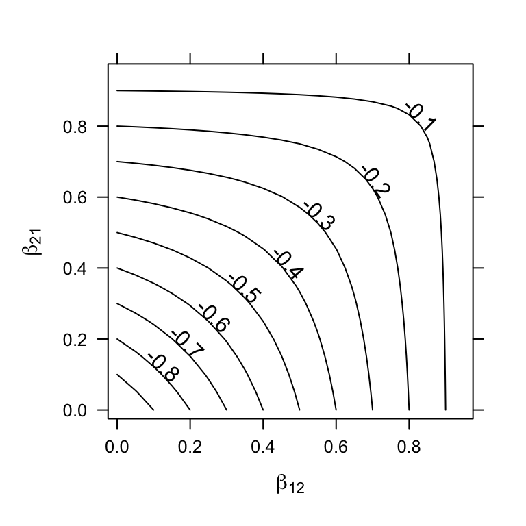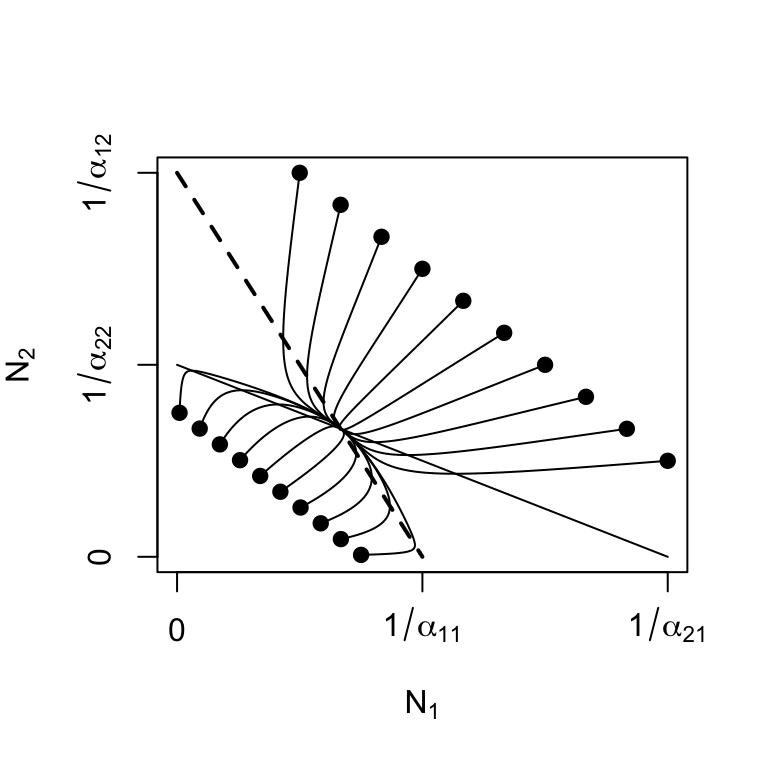
<p class="caption">
Figure 7.5: Stable equilibria: as the relative strength of interspecific competition increases (B(ij) increases toward 1), instability increases (lambda(1) increases toward 0). Solid dots represent initial abundances.
</p>
</div>
<p><strong>Unstable equilibria – <span class="math inline">\(\beta_{ij}, \, \beta_{ji} &gt; 1\)</span></strong></p>
<p>These criteria correspond to <span class="math inline">\(\alpha_{12}&gt;\alpha_{22} ,\, \alpha_{21}&gt;\alpha_{11}\)</span> (Fig. <a href="competition.html#fig:LVeigU">7.6</a>).
As we saw above, the Lotka-Volterra competition model has not only stable equilibria, but also unstable equilibria, when both populations are greater than zero. Although an unstable equilibrium cannot persist, <span class="math inline">\(\beta_{ij}, \, \beta_{ji} &gt; 1\)</span> creates interesting and probably important dynamics<span class="citation">(Hastings <a href="#ref-Hastings2004a" role="doc-biblioref">2004</a>)</span>. One of the results is referred to as <em>founder control</em>, where either species can colonize a patch, and whichever species gets there first (i.e. the founder) can resist any invader <span class="citation">(Bolker, Pacala, and Neuhauser <a href="#ref-Bolker2003a" role="doc-biblioref">2003</a>)</span>.</p>
<p>Another interesting phenomenon is the <em>saddle</em> itself; this unstable equilibrium is an <em>attractor-repeller</em>, that is, it attracts from some directions and repels from others (Fig. <a href="competition.html#fig:LVeigU">7.6</a>). This implies that the final outcome of dynamics may be difficult to predict from initial trajectories.</p>
<div class="figure"><span id="fig:LVeigU"></span>
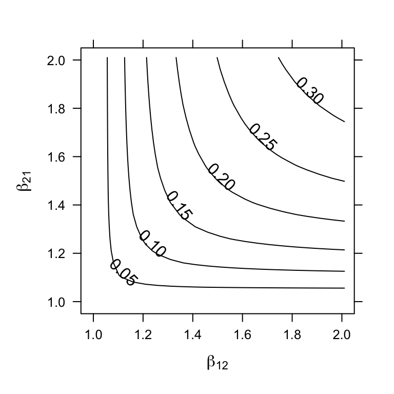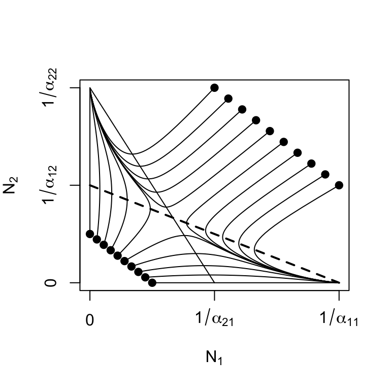
<p class="caption">
Figure 7.6: Unstable equilibria: as the relative strength of interspecific competition increases (B(ij) &gt; 1), instability increases (lambda(1) &gt; 0). The unstable equilibrium may attract trajectories from some initial states, but repel from others (solid dots represent initial abundances).
</p>
</div>
<p>Recall the geometric interpretation of this unstable equilibrium — a saddle. The trajectory of a ball rolling across a saddle can depend to a very large degree on where the ball starts. Place it on the crown of the saddle, and it will tend to roll in a very deterministic fashion directly toward the unstable equilibrium, even if it eventually rolls off the side.</p>
<p><strong>Eigenanalysis in R of the Jacobian where <span class="math inline">\(\beta_{ij}, \, \beta_{ji} &gt; 1\)</span></strong>: Here we create values for <span class="math inline">\(\mathbf{\alpha}\)</span> that create an unstable equilbrium.</p>
<div class="sourceCode" id="cb211"><pre class="sourceCode r"><code class="sourceCode r"><span id="cb211-1"><a href="competition.html#cb211-1"></a>a11 &lt;-<span class="st"> </span>a22 &lt;-<span class="st"> </span><span class="fl">0.01</span></span>
<span id="cb211-2"><a href="competition.html#cb211-2"></a>a12 &lt;-<span class="st"> </span>a21 &lt;-<span class="st"> </span><span class="fl">0.011</span></span>
<span id="cb211-3"><a href="competition.html#cb211-3"></a>N1 &lt;-<span class="st"> </span><span class="kw">eval</span>(N1Star); N2 &lt;-<span class="st"> </span><span class="kw">eval</span>(N2Star)</span>
<span id="cb211-4"><a href="competition.html#cb211-4"></a><span class="kw">eigen</span>( <span class="kw">eval</span>(J) )[[<span class="st">&quot;values&quot;</span>]]</span></code></pre></div>
<pre><code>## [1]  0.04761905 -1.00000000</code></pre>
<p>The dominant eigenvalue is now positive, while the other is negative, indicating a saddle (Table <a href="competition.html#tab:eiginterpret">7.2</a>.</p>
<p><strong>Neutral equilibria — <span class="math inline">\(\beta_{ij} = \beta_{ji} = 1\)</span></strong>: What happens when the inter- and intraspecific effects of each species are equal? This puts the populations on a knife’s edge, between an unstable saddle and a stable attractor. Let’s think first about a geometric interpretation, where we shift between a bowl, representing a stable attractor, and a saddle, representing what we call a <em>neutral saddle</em>.</p>
<p>Imagine that we begin with a stable attractor, represented by a bowl, where <span class="math inline">\(\alpha_{ij} &lt; \alpha_{ii}\)</span>. We drop a ball in a bowl, and the bowl rolls to the bottom — the global attractor. As we increase the interspecific competition coefficients, <span class="math inline">\(\alpha_{ij} \to \alpha_{ii}\)</span>, we are pressing down on just two points on opposite sides of the bowl. Our hands push down on two opposite sides, until the bowl is flat in one direction, but has two remaining sides that slope downward. Perhaps you think this looks like a taco shell? The same shape is easily replicated by just picking up a piece of paper by opposite edges, letting it sag in the middle. This is the neutral saddle. What would eigenanalysis tell us? Let’s find out.</p>
<p>We could just charge ahead in R, and I encourage you to do so, repeating the steps above. You would find that doesn’t work because when <span class="math inline">\(\beta_{ij} = \beta_{ji} = 1\)</span>, our equilibria are undefined (numerator and denominator are zero in <a href="competition.html#eq:lvn1eq">(7.8)</a>, <a href="competition.html#eq:lvn2eq">(7.9)</a>. Hmmm. Perhaps we can simplify things by taking the <em>limit</em> of the equilibrium, as <span class="math inline">\(\alpha_{ij} \to \alpha_{jj}\)</span>. Let <span class="math inline">\(\alpha_{12}=a\)</span> and <span class="math inline">\(\alpha_{22}=a+h\)</span>, and let <span class="math inline">\(\alpha_{21}=b\)</span> and <span class="math inline">\(\alpha_{11}=b+h\)</span>. Then we want the limit of the equilibrium as <span class="math inline">\(h\)</span> goes to zero.
<span class="math display" id="eq:lim">\[\begin{align}
  \tag{7.16}
  \lim_{h \to 0}\frac{\left(a+h\right)-a}{\left(a+h\right)\left(b+h\right) - ab} &amp;=\frac{1}{a+b}
\end{align}\]</span>
Thus, <span class="math inline">\(N_1^* = 1/(\alpha_{11}+\alpha_{22})\)</span>, assuming <span class="math inline">\(\alpha_{12} = \alpha_{22}\)</span> and <span class="math inline">\(\alpha_{21}=\alpha_{11}\)</span>. Therefore, the equilibrium population size is simply the inverse of the sum of these coefficients.</p>
<p><strong>Eigenanalysis in R of the Jacobian where <span class="math inline">\(\beta_{ij} = \beta_{ji} = 1\)</span></strong>: Here we create values for <span class="math inline">\(\mathbf{\alpha}\)</span> that create a neutral equilbrium.</p>
<div class="sourceCode" id="cb213"><pre class="sourceCode r"><code class="sourceCode r"><span id="cb213-1"><a href="competition.html#cb213-1"></a>a11 &lt;-<span class="st"> </span>a21 &lt;-<span class="st"> </span><span class="fl">0.01</span>; a22 &lt;-<span class="st"> </span>a12 &lt;-<span class="st"> </span><span class="fl">0.015</span></span></code></pre></div>
<p>We determine <span class="math inline">\(N^*\)</span> using <a href="competition.html#eq:lim">(7.16)</a> because the usual expression, <a href="competition.html#eq:lvn2eq">(7.9)</a>, fails because the denominator equals 0.</p>
<div class="sourceCode" id="cb214"><pre class="sourceCode r"><code class="sourceCode r"><span id="cb214-1"><a href="competition.html#cb214-1"></a>N1 &lt;-<span class="st"> </span>N2 &lt;-<span class="st"> </span><span class="dv">1</span><span class="op">/</span>(a11<span class="op">+</span>a22)</span>
<span id="cb214-2"><a href="competition.html#cb214-2"></a><span class="kw">eigen</span>( <span class="kw">eval</span>(J) )[[<span class="st">&quot;values&quot;</span>]]</span></code></pre></div>
<pre><code>## [1] -1  0</code></pre>
<p>The dominant eigenvalue is now zero, indicating a neutral equilibrium (Table <a href="competition.html#tab:eiginterpret">7.2</a>. The neutral nature of this equilibrium results in more than one equilibrium. Let’s try a different one, also on the isocline.</p>
<div class="sourceCode" id="cb216"><pre class="sourceCode r"><code class="sourceCode r"><span id="cb216-1"><a href="competition.html#cb216-1"></a>N1 &lt;-<span class="st"> </span><span class="dv">1</span><span class="op">/</span>(a11); N2&lt;-<span class="dv">0</span></span>
<span id="cb216-2"><a href="competition.html#cb216-2"></a><span class="kw">eigen</span>( <span class="kw">eval</span>(J) )[[<span class="st">&quot;values&quot;</span>]]</span></code></pre></div>
<pre><code>## [1] -1  0</code></pre>
<p>Again <span class="math inline">\(\lambda_1=0\)</span> so this equilibrium is also neutral.</p>
<p>When we perform eigenanalysis, we find that the largest of the two eigenvalues is zero, while the other is negative. This reveals that we have neither a bowl nor an unstable saddle, but rather, a taco shell, with a level bottom — a neutral saddle.</p>
<div class="figure"><span id="fig:lvstabneut"></span>

<p class="caption">
Figure 7.7: <em>Trajectories of N(1),N(2) for <span class="math inline">\(eta_{12} = eta_{21} = 1\)</span>. The entire isocline is an attractor, a neutral saddle, and the final abundances depend on the initial abundances and the ratio of <span class="math inline">\(lpha_{11}/lpha_{22}\)</span>. The circle represents our one derived equilibrium.</em>
</p>
</div>
<p>For example, if the populations start at low abundances, both populations will tend to increase at constant rates until they run into the isocline. Thus, both populations can increase when rare, but the relative abundances will never change, regardless of initial abundances.</p>
<p>Recall the Lotka-Volterra isoclines, and what we originally stated about them. We stated that the equilibrium will be the point where the isoclines cross. When all <span class="math inline">\(\beta_{ij} = \beta_{ji} = 1\)</span>, the <em>isoclines completely overlap</em>, so we have an infinite number of equilibria—all the points along the line
<span class="math display">\[\begin{equation}
  N_2= \frac{1}{\alpha_{22}} - \frac{\alpha_{11}}{\alpha_{22}}N_1
\end{equation}\]</span>
and the initial abundances determine the trajectory and the equilibrium (Fig. <a href="competition.html#fig:lvstabneut">7.7</a>).</p>
</div>
</div>
<div id="return-time-and-the-effect-of-r" class="section level2">
<h2><span class="header-section-number">7.4</span> Return Time and the Effect of <span class="math inline">\(r\)</span></h2>
<p>Above, we referred to <span class="math inline">\(\lambda_1\)</span> as the perturbation growth rate. More commonly, people refer to another quantity known as <em>characteristic return time</em>. Return time is commonly calculated as the negative inverse of the largest real part of the eigenvalues,
<span class="math display" id="eq:rt4">\[\begin{equation}
  \tag{7.17}
  RT = -\frac{1}{\lambda_1}.
\end{equation}\]</span>
It is the time required to return a fraction of the distance<a href="#fn49" class="footnote-ref" id="fnref49"><sup>49</sup></a> back toward an equilibrium. Negative return times (<span class="math inline">\(\lambda_1&gt;0\)</span>) refer to “backward time,” or time into the past when this population would have been this far away (Fig. <a href="competition.html#fig:RT">7.8</a>.</p>
If we envision the populations sitting at an equilibrium, we can then envision a small perturbation that shifts them away from that point in state space. Let’s call this displacement <span class="math inline">\(x_0\)</span>. The rate of change of in <span class="math inline">\(x\)</span> is approximately the exponential rate,
<span class="math display" id="eq:3">\[\begin{equation}
  \tag{6.5}
  \frac{d x}{d t} \approx c\lambda_1 t.
\end{equation}\]</span>
where <span class="math inline">\(c\)</span> is a constant, so the distance traveled, <span class="math inline">\(x\)</span>, is given by <a href="competition.html#eq:2x">(7.15)</a>. Therefore, a negative <span class="math inline">\(\lambda_1\)</span> indicates an exponential decline in the disturbance, back toward the equilibrium (Fig. <a href="competition.html#fig:RT">7.8</a>. The units of return time are the same as for <span class="math inline">\(r\)</span>. Recall that all of this depends on the linearization of the curved surface around an equilibrium; it therefore applies exactly to only an infinitesimally small region around the equilibrium. It also usually provides the average, regardless of whether the perturbation is a population decline or a population increase.
<div class="figure"><span id="fig:RT"></span>
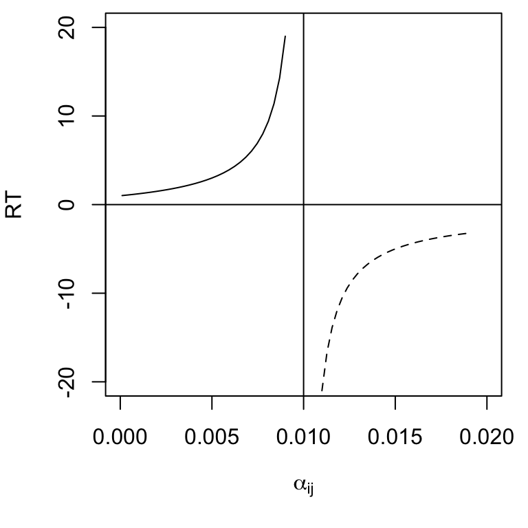
<p class="caption">
Figure 7.8: <em>For <span class="math inline">\(eta_{ij} &lt; 1\)</span>, return time is positive because some time will lapse before the system returns toward to its equilibrium. For <span class="math inline">\(eta_{ij}&gt;1\)</span>, return time is negative, because the system was closer to the (unstable) equilibrium in the past.</em>
</p>
</div>
<p><strong>Effect of <span class="math inline">\(r\)</span> on stability and return time</strong></p>
<p>Consider the Jacobian matrix <a href="competition.html#eq:jac">(7.14)</a>, and note that <span class="math inline">\(-r_i\)</span> appears in each Jacobian element. Therefore, the larger the <span class="math inline">\(r\)</span>, the greater the magnitude of the Jacobian elements. This causes <span class="math inline">\(\lambda_1\)</span> to increase in magnitude, reflecting greater responsiveness to perturbation at the equilibrium (Fig. <a href="competition.html#fig:LVeigR">7.9</a>.</p>
<p>If we consider return time for continuous models where <span class="math inline">\(\beta_{12},\,\beta_{21} &lt; 1\)</span>, greater <span class="math inline">\(r\)</span> shortens return time, increasing stability (Fig. <a href="competition.html#fig:LVeigR">7.9</a>. For continuous models where <span class="math inline">\(\beta_{12},\,\beta_{21} &gt; 1\)</span>, greater <span class="math inline">\(r\)</span> increases perturbation growth rate, decreasing stability (Fig. <a href="competition.html#fig:LVeigR">7.9</a>. For discrete models, which we have not discussed in this context, recall that increasing <span class="math inline">\(r_d\)</span> of discrete logistic growth can destabilize the population because of the built-in lag. The same is true for discrete competition models — increasing <span class="math inline">\(r_d\)</span> too much destabilizes the interaction.</p>
<div class="figure"><span id="fig:LVeigR"></span>
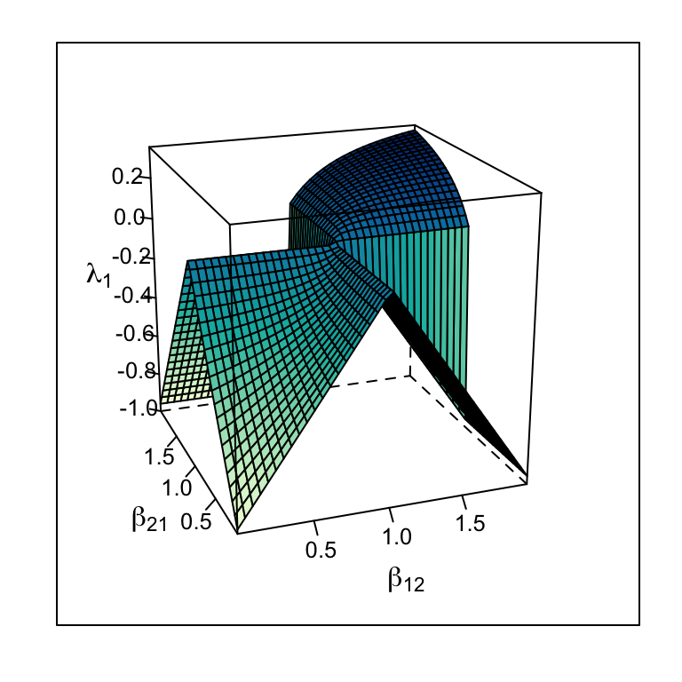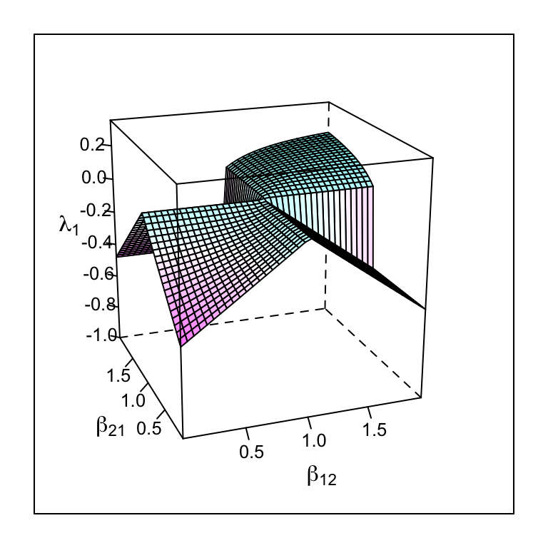
<p class="caption">
Figure 7.9: <em>The dominant eigenvalue of the Jacobian matrix varies with r as well as with <span class="math inline">\(eta\)</span> — higher r causes greater responsiveness to perturbations around an internal equilibrium for r = 1 and r = 0.5.</em>
</p>
</div>
</div>
<div id="indirect-competition-for-resources" class="section level2">
<h2><span class="header-section-number">7.5</span> Indirect competition for resources</h2>
<p>Consumption is key to life. Energy consumption occurs as heterotrophs consume inorganic material and autotrophs use the sun or oxidation of inorganic molecules to acquire energy. All organisms require carbon and inorganic materials such as nitrogen and phosphorus as basic building blocks of cells. when one or more of these limit growth, we refer to these as <em>limiting resources</em>, and when differential growth limitation among species occurs as a result of this short supply, we refer to this as <em>resource limitation</em> and consequently <em>resource competition</em>.</p>
<p>In this chapter, we work through an example of resource competition among photoautotrophs for inorganic resources <span class="citation">(Tilman <a href="#ref-Tilman1982" role="doc-biblioref">1982</a>)</span>. As with nearly all the models in this book, We represent the growth of resources and consumers as growth rate = gains - losses. Here we start with a relatively simple version, with two plant species competing for one limiting resource such as nitrogen <span class="citation">(Roughgarden <a href="#ref-Roughgarden1998" role="doc-biblioref">1998</a>)</span>.</p>
<div id="linear-and-nonlinear-responses" class="section level3">
<h3><span class="header-section-number">7.5.1</span> Linear and nonlinear responses</h3>
<p>Let our resource <span class="math inline">\(R\)</span> be supplied at a constant rate, <span class="math inline">\(S\)</span>, perhaps determined by nitrifying soil microbes at steady state. This rate declines as the amount of resource grows, or <span class="math inline">\(S-aR\)</span>. This is likely to happen when a resource is washed out of the soil, or if a high amount of resource suppresses its production.
<span class="math display">\[\frac{dR}{dt} = S-aR\]</span>
In the absence of anything else removing the resource, the equilibrium amount would be
<span class="math inline">\(R^* = S/a\)</span>. However, our plant species will remove resource from the resource pool.</p>
<p>Let our competitors be measured in grams of biomass, where their growth rate depends on resource uptake and a constant loss rate,
<span class="math display">\[\frac{dP_1}{dt} = (u_1 R - d_1)P_1\]</span>
<span class="math display">\[\frac{dP_2}{dt} = (u_2 R - d_2)P_2\]</span>
As we can see, these two species do not interact directly. Parameters <span class="math inline">\(d_i\)</span> are grams lost per gram of plant per unit time. The parameters <span class="math inline">\(u_i\)</span> are the rates of grams gained per gram of plant per unit resource per unit time. They do interact with resources. Here we graph mass-specific growth rates (analogous to per capita growth rates)as a funciton of resource concentrations.</p>
<div class="sourceCode" id="cb218"><pre class="sourceCode r"><code class="sourceCode r"><span id="cb218-1"><a href="competition.html#cb218-1"></a>u1 &lt;-<span class="st"> </span><span class="dv">1</span>; d1 &lt;-<span class="st"> </span><span class="fl">.3</span></span>
<span id="cb218-2"><a href="competition.html#cb218-2"></a>u2 &lt;-<span class="st"> </span><span class="fl">.5</span>; d2 &lt;-<span class="st"> </span><span class="fl">0.1</span></span>
<span id="cb218-3"><a href="competition.html#cb218-3"></a></span>
<span id="cb218-4"><a href="competition.html#cb218-4"></a>{</span>
<span id="cb218-5"><a href="competition.html#cb218-5"></a>  <span class="kw">par</span>(<span class="dt">mar=</span>(<span class="kw">c</span>(<span class="dv">5</span>, <span class="dv">4</span>,.<span class="dv">5</span>,.<span class="dv">5</span>)))</span>
<span id="cb218-6"><a href="competition.html#cb218-6"></a>  <span class="kw">curve</span>(u1<span class="op">*</span>x <span class="op">-</span><span class="st"> </span>d1, <span class="dt">ylab=</span><span class="st">&quot;dP/(Pdt)&quot;</span>, <span class="dt">xlab=</span><span class="st">&quot;Resource concentration&quot;</span>)</span>
<span id="cb218-7"><a href="competition.html#cb218-7"></a>  <span class="kw">curve</span>(u2<span class="op">*</span>x <span class="op">-</span><span class="st"> </span>d2, <span class="dt">lty=</span><span class="dv">2</span>, <span class="dt">col=</span><span class="dv">2</span>, <span class="dt">add=</span><span class="ot">TRUE</span>)</span>
<span id="cb218-8"><a href="competition.html#cb218-8"></a>  <span class="kw">abline</span>(<span class="dt">h=</span><span class="dv">0</span>, <span class="dt">lty=</span><span class="dv">3</span>)</span>
<span id="cb218-9"><a href="competition.html#cb218-9"></a>  <span class="kw">legend</span>(<span class="st">&quot;topleft&quot;</span>, <span class="kw">c</span>(<span class="st">&quot;Sp. 1&quot;</span>, <span class="st">&quot;Sp. 2&quot;</span>), <span class="dt">lty=</span><span class="dv">1</span><span class="op">:</span><span class="dv">2</span>, <span class="dt">col=</span><span class="dv">1</span><span class="op">:</span><span class="dv">2</span>, <span class="dt">bty=</span><span class="st">&#39;n&#39;</span>)</span>
<span id="cb218-10"><a href="competition.html#cb218-10"></a>  }</span></code></pre></div>
<div class="figure"><span id="fig:dP"></span>
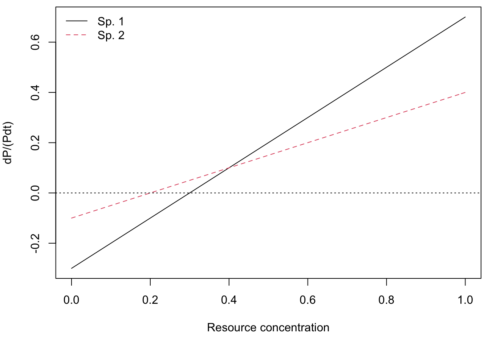
<p class="caption">
Figure 7.10: <em>Mass-specific growth rates of two species across a range of resource concentrations.</em>
</p>
</div>
<p>From Fig. <a href="competition.html#fig:dP">7.10</a>, we see that at high resource concentrations, species 1 grows faster than species 2. However, at low resource concentrations, species 2 grows faster than species 1. Resource concentrations change as plants take up resources, so when does the whole system reach an equilibrium?</p>
<p>Both species (Fig. <a href="competition.html#fig:dP">7.10</a>) increase in biomass as long as resources are high enough to allow growth, whereas resources will decline as plant grow more and more and take up increasing amounts of resources. Eventually plant biomass is high enough to drive down resources so low that mass-specific growth rate is zero. This will happen at different resource concentrations for our two species. We see that species 2 has a positive growth rate when species 1 does not (Fig. <a href="competition.html#fig:dP">7.10</a>).</p>
<p>If we try to solve for the equilibrium for <span class="math inline">\(P_1\)</span>, we get
<span class="math display">\[\begin{align*}
0&amp;=(u_1 R -d_1)P_1\\
0&amp;=(u_1 R - d_1)\\
R_{P1}^* &amp;= d_1 / u_1
\end{align*}\]</span>
where we get an equilibrium resource concentration in the presence of only species 1, but not <span class="math inline">\(P_1^*\)</span>. Similarly, we would find <span class="math inline">\(R_{P2}^* = d_2 / u_2\)</span>. So, for the above species, the equlibirum resource concentrations are the <span class="math inline">\(x\)</span>-intercepts, or</p>
<div class="sourceCode" id="cb219"><pre class="sourceCode r"><code class="sourceCode r"><span id="cb219-1"><a href="competition.html#cb219-1"></a>(Rstar &lt;-<span class="st"> </span><span class="kw">c</span>(<span class="dt">R1=</span>d1<span class="op">/</span>u1, <span class="dt">R2=</span>d2<span class="op">/</span>u2))</span></code></pre></div>
<pre><code>##  R1  R2 
## 0.3 0.2</code></pre>
<p>Just as we saw in Fig. <a href="competition.html#fig:dP">7.10</a>, these values predict that species 2 will grow at a lower resource levels than species 1 and is therefore predicted to exclude species 1. This type of resource competition for a single limiting resource was named the <span class="math inline">\(R^*\)</span> rule (“R-star”):</p>
<p><strong>The species with the lowest <span class="math inline">\(R^*\)</span> for the shared limiting resource will exclude all others.</strong></p>
<p>We refer to this type of resource competition as <span class="math inline">\(R^*\)</span> competition.</p>
<p>When one species excludes the other, what will the equilibrium value, <span class="math inline">\(P^*\)</span>, be? For that, we need to refine our expression for <span class="math inline">\(R\)</span> to include uptake by plants:
<span class="math display">\[\frac{dR}{dt} = S-aR - w_1u_1P_1R - w_2u_2P_2R\]</span>
Parameters <span class="math inline">\(w_1\)</span> and <span class="math inline">\(w_2\)</span> are the amount of resource per gram of biomass, or the resource concentrations in the two plant species. Now that we have an explicit expression for resource dynamics, we can create a model to integrate the dynamics of these three components.</p>
<div class="sourceCode" id="cb221"><pre class="sourceCode r"><code class="sourceCode r"><span id="cb221-1"><a href="competition.html#cb221-1"></a>rcomp &lt;-<span class="st"> </span><span class="cf">function</span>(time, y, parameters){</span>
<span id="cb221-2"><a href="competition.html#cb221-2"></a>  P1 &lt;-<span class="st"> </span>y[<span class="dv">1</span>]; P2 &lt;-<span class="st"> </span>y[<span class="dv">2</span>]; R &lt;-<span class="st"> </span>y[<span class="dv">3</span>];</span>
<span id="cb221-3"><a href="competition.html#cb221-3"></a>  <span class="kw">with</span>( <span class="kw">as.list</span>(parameters),{</span>
<span id="cb221-4"><a href="competition.html#cb221-4"></a>    dP1 &lt;-<span class="st"> </span>(u1<span class="op">*</span>R <span class="op">-</span><span class="st"> </span>d1)<span class="op">*</span>P1</span>
<span id="cb221-5"><a href="competition.html#cb221-5"></a>    dP2 &lt;-<span class="st"> </span>(u2<span class="op">*</span>R <span class="op">-</span><span class="st"> </span>d2)<span class="op">*</span>P2</span>
<span id="cb221-6"><a href="competition.html#cb221-6"></a>    dR &lt;-<span class="st"> </span>S <span class="op">-</span>a<span class="op">*</span>R <span class="op">-</span><span class="st"> </span>w1<span class="op">*</span>u1<span class="op">*</span>P1<span class="op">*</span>R <span class="op">-</span><span class="st"> </span>w2<span class="op">*</span>u2<span class="op">*</span>P2<span class="op">*</span>R</span>
<span id="cb221-7"><a href="competition.html#cb221-7"></a>    <span class="kw">return</span>(<span class="kw">list</span>(<span class="kw">c</span>(dP1, dP2, dR)))</span>
<span id="cb221-8"><a href="competition.html#cb221-8"></a>  })</span>
<span id="cb221-9"><a href="competition.html#cb221-9"></a>}</span></code></pre></div>
<p>Now we run the model.</p>
<div class="sourceCode" id="cb222"><pre class="sourceCode r"><code class="sourceCode r"><span id="cb222-1"><a href="competition.html#cb222-1"></a>t &lt;-<span class="st"> </span><span class="kw">seq</span>(<span class="dv">0</span>, <span class="dv">150</span>, <span class="dt">by=</span>.<span class="dv">5</span>)</span>
<span id="cb222-2"><a href="competition.html#cb222-2"></a>p &lt;-<span class="st"> </span><span class="kw">list</span>(<span class="dt">u1=</span><span class="dv">1</span>, <span class="dt">u2=</span><span class="fl">0.5</span>, <span class="dt">d1=</span><span class="fl">0.3</span>, <span class="dt">d2=</span><span class="fl">0.1</span>, <span class="dt">w1=</span>.<span class="dv">01</span>, <span class="dt">w2=</span>.<span class="dv">01</span>, <span class="dt">S=</span><span class="dv">1</span>, <span class="dt">a=</span>.<span class="dv">1</span>)</span>
<span id="cb222-3"><a href="competition.html#cb222-3"></a>Peq &lt;-<span class="st"> </span><span class="kw">with</span>(<span class="kw">as.list</span>(p),{</span>
<span id="cb222-4"><a href="competition.html#cb222-4"></a>  <span class="kw">c</span>( <span class="dt">P1=</span>(S<span class="op">*</span>u1 <span class="op">-</span><span class="st"> </span>a<span class="op">*</span>d1)<span class="op">/</span>(w1<span class="op">*</span>d1<span class="op">*</span>u1), <span class="dt">P2=</span>(S<span class="op">*</span>u2 <span class="op">-</span><span class="st"> </span>a<span class="op">*</span>d2)<span class="op">/</span>(w2<span class="op">*</span>d2<span class="op">*</span>u2))</span>
<span id="cb222-5"><a href="competition.html#cb222-5"></a>})</span>
<span id="cb222-6"><a href="competition.html#cb222-6"></a>Peq</span></code></pre></div>
<pre><code>##       P1       P2 
## 323.3333 980.0000</code></pre>
<div class="sourceCode" id="cb224"><pre class="sourceCode r"><code class="sourceCode r"><span id="cb224-1"><a href="competition.html#cb224-1"></a>y.initial &lt;-<span class="st"> </span><span class="kw">c</span>(<span class="dt">P1=</span><span class="dv">200</span>, <span class="dt">P2=</span><span class="dv">50</span>, <span class="dt">R=</span><span class="dv">1</span>)</span>
<span id="cb224-2"><a href="competition.html#cb224-2"></a>rout &lt;-<span class="st"> </span><span class="kw">ode</span>(<span class="dt">y=</span>y.initial, <span class="dt">time=</span>t, <span class="dt">fun=</span>rcomp, <span class="dt">parms=</span>p)</span>
<span id="cb224-3"><a href="competition.html#cb224-3"></a>rdf &lt;-<span class="st"> </span><span class="kw">data.frame</span>( rout)</span>
<span id="cb224-4"><a href="competition.html#cb224-4"></a>r.long &lt;-<span class="st"> </span><span class="kw">pivot_longer</span>(rdf, <span class="op">-</span>time, <span class="dt">names_to =</span> <span class="st">&quot;State&quot;</span>, <span class="dt">values_to =</span> <span class="st">&quot;Grams&quot;</span>)</span>
<span id="cb224-5"><a href="competition.html#cb224-5"></a><span class="kw">ggplot</span>(<span class="dt">data=</span>r.long, <span class="kw">aes</span>(time, Grams, <span class="dt">colour=</span>State, <span class="dt">linetype=</span>State)) <span class="op">+</span><span class="st"> </span></span>
<span id="cb224-6"><a href="competition.html#cb224-6"></a><span class="st">  </span><span class="kw">geom_line</span>() <span class="op">+</span><span class="st"> </span><span class="kw">facet_wrap</span>(<span class="op">~</span>State, <span class="dt">scales=</span><span class="st">&quot;free&quot;</span>)</span></code></pre></div>
<p>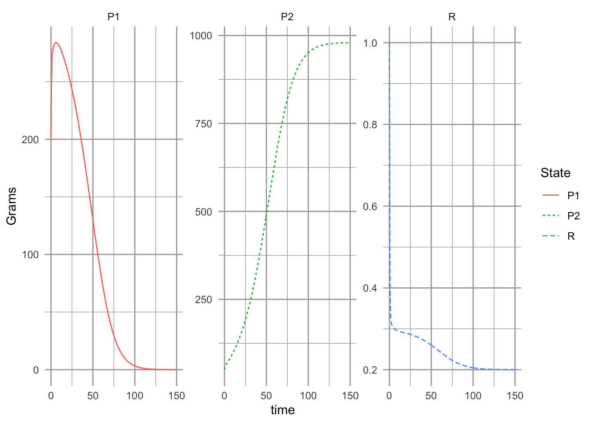</p>
<p>Now if we like, we can find <span class="math inline">\(P_2^*\)</span> when <span class="math inline">\(R^*=d_2/u_2\)</span>, and <span class="math inline">\(P_1 =0\)</span>.
<span class="math display">\[\begin{align*}
\frac{dR}{dt} = 0 &amp;= S-a(d_2/u_2) - w_2u_2P_2(d_2/u_2)\\
w_2d_2P_2 &amp;= S-ad_2/u_2\\
P^*_2 &amp;= \frac{S u_2 - a d_2}{u_2 w_2 d_2}
\end{align*}\]</span></p>
<p>It is clear from this expression that increasing the death rate (<span class="math inline">\(d\)</span>) will drive down <span class="math inline">\(P^*_2\)</span>, and so will <span class="math inline">\(w\)</span> because it is less efficient—as the nutrient content of the plant increases, the amount of biomass it can make declines.</p>
<p>We also see that increasing the supply rate, <span class="math inline">\(S\)</span>, and decreasing the background resource loss rate, <span class="math inline">\(a\)</span>, will drive up biomass. In addition, as long as <span class="math inline">\(S &gt; w_2 d_2\)</span> increasing resource-dependent gain rate, <span class="math inline">\(u_2\)</span> will also drive up equilibrium biomass.</p>
<div class="sourceCode" id="cb225"><pre class="sourceCode r"><code class="sourceCode r"><span id="cb225-1"><a href="competition.html#cb225-1"></a><span class="co"># let u_2 be &#39;x&#39;</span></span>
<span id="cb225-2"><a href="competition.html#cb225-2"></a><span class="co"># I use bquote() for math-friendly labels, but you don&#39;t have to.</span></span>
<span id="cb225-3"><a href="competition.html#cb225-3"></a><span class="kw">with</span>( <span class="kw">as.list</span>(p), {</span>
<span id="cb225-4"><a href="competition.html#cb225-4"></a><span class="kw">curve</span>( (S <span class="op">*</span>x <span class="op">-</span><span class="st"> </span>a<span class="op">*</span>d2)<span class="op">/</span>(x<span class="op">*</span>w2<span class="op">*</span>d2),  <span class="dv">0</span>, <span class="dv">3</span>,</span>
<span id="cb225-5"><a href="competition.html#cb225-5"></a>       <span class="dt">ylab=</span><span class="kw">bquote</span>((S <span class="op">*</span>u[<span class="dv">2</span>] <span class="op">-</span><span class="st"> </span>a<span class="op">*</span>d[<span class="dv">2</span>])<span class="op">/</span>(u[<span class="dv">2</span>]<span class="op">*</span>w[<span class="dv">2</span>]<span class="op">*</span>d[<span class="dv">2</span>])), <span class="dt">xlab=</span><span class="kw">bquote</span>(u[<span class="dv">2</span>]) )</span>
<span id="cb225-6"><a href="competition.html#cb225-6"></a>})</span></code></pre></div>
<div class="figure"><span id="fig:unnamed-chunk-81"></span>

<p class="caption">
Figure 7.11: <em>As uptake rate (<span class="math inline">\(u\)</span>) increases, euilibrium biomass will increase as well.</em>
</p>
</div>
<p>In the above model, per capita growth rates were linear functions of resource concentration. In Tilman’s presentation of resource competition, the consumers had nonlinear resource-dependent growth rates,
<span class="math display">\[\frac{dP_i}{Pdt}= r_i\frac{R}{k_i + R} - d_i\]</span>
You might recognize this as related to Michaelis-Menton enzyme kinetics. It was used in bacteriology by Monod to model culture growth in chemostats. It looks like Fig. <a href="competition.html#fig:monod">7.12</a>.</p>
<div class="sourceCode" id="cb226"><pre class="sourceCode r"><code class="sourceCode r"><span id="cb226-1"><a href="competition.html#cb226-1"></a>r &lt;-<span class="kw">c</span>(<span class="dv">1</span>, <span class="fl">.5</span>); k=<span class="kw">c</span>(<span class="dv">5</span>, <span class="fl">.1</span>); d =<span class="st"> </span><span class="fl">0.3</span></span>
<span id="cb226-2"><a href="competition.html#cb226-2"></a>{<span class="kw">curve</span>(r[<span class="dv">1</span>]<span class="op">*</span>x<span class="op">/</span>(k[<span class="dv">1</span>]<span class="op">+</span>x) <span class="op">-</span><span class="st"> </span>d, <span class="dv">0</span>, <span class="dv">10</span>, <span class="dt">ylab=</span><span class="kw">bquote</span>(dP<span class="op">/</span>(Pdt)), <span class="dt">xlab=</span><span class="st">&quot;R&quot;</span>)</span>
<span id="cb226-3"><a href="competition.html#cb226-3"></a><span class="kw">curve</span>(r[<span class="dv">2</span>]<span class="op">*</span>x<span class="op">/</span>(k[<span class="dv">2</span>] <span class="op">+</span><span class="st"> </span>x) <span class="op">-</span><span class="st"> </span>d, <span class="dt">lty=</span><span class="dv">2</span>, <span class="dt">add=</span><span class="ot">TRUE</span>)</span>
<span id="cb226-4"><a href="competition.html#cb226-4"></a><span class="kw">abline</span>(<span class="dt">h=</span><span class="dv">0</span>, <span class="dt">lty=</span><span class="dv">3</span>); <span class="kw">text</span>(<span class="fl">7.5</span>, <span class="dv">0</span>, <span class="st">&quot;gain = loss&quot;</span>, <span class="dt">adj=</span><span class="kw">c</span>(.<span class="dv">5</span>, <span class="fl">-.3</span>))</span>
<span id="cb226-5"><a href="competition.html#cb226-5"></a>}</span></code></pre></div>
<div class="figure"><span id="fig:monod"></span>
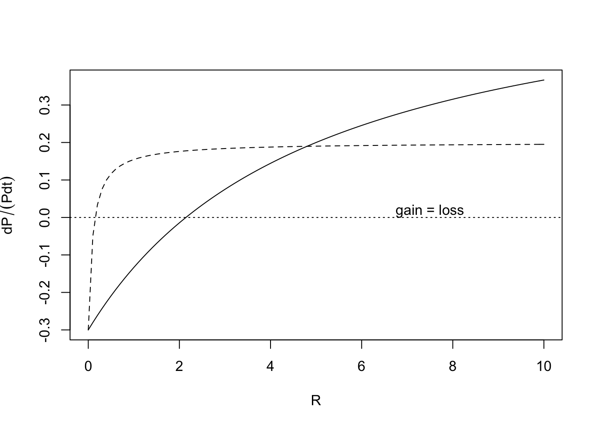
<p class="caption">
Figure 7.12: <em>The Monod function for per capita resource-dependent growth rates of two different populations.</em>
</p>
</div>
<p>As we saw earlier with linear mass-specific growth rates, one species will have a lower <span class="math inline">\(R^*\)</span> than the other, and this model predicts that it will outcompete the other.</p>
</div>
<div id="relative-nonlinearity" class="section level3">
<h3><span class="header-section-number">7.5.2</span> Relative nonlinearity</h3>
The <span class="math inline">\(R^*\)</span> model does not permit coexistence in part because of how the resource replenishes. Our above model of the resource <span class="math inline">\(R\)</span> permits only a declining rate of change (rate of renewal declines with increasing R). In contrast, if the resource is <em>biotic</em>, such as a rapidly growing prey population, the renewal may accelerate with increasing population size.
<div class="figure"><span id="fig:unnamed-chunk-82"></span>
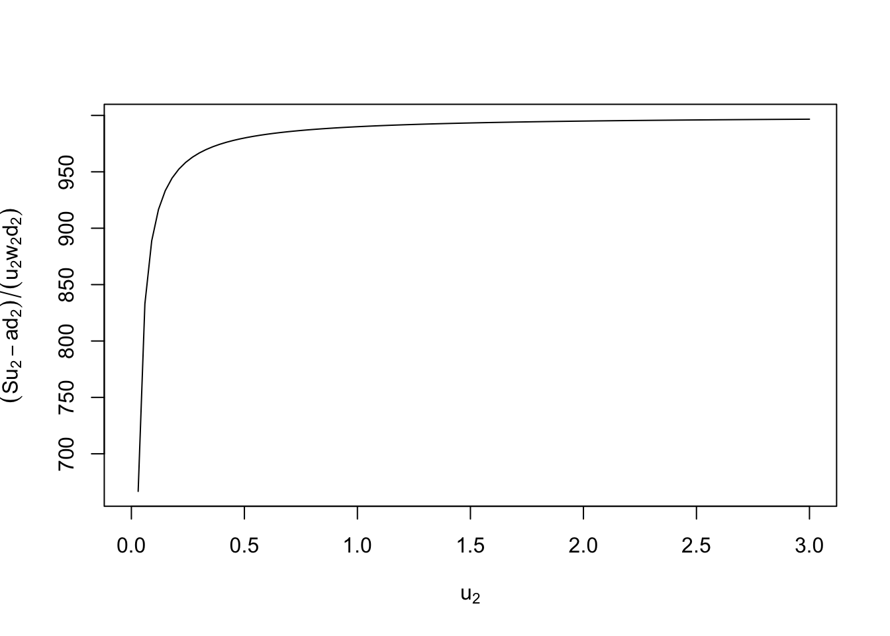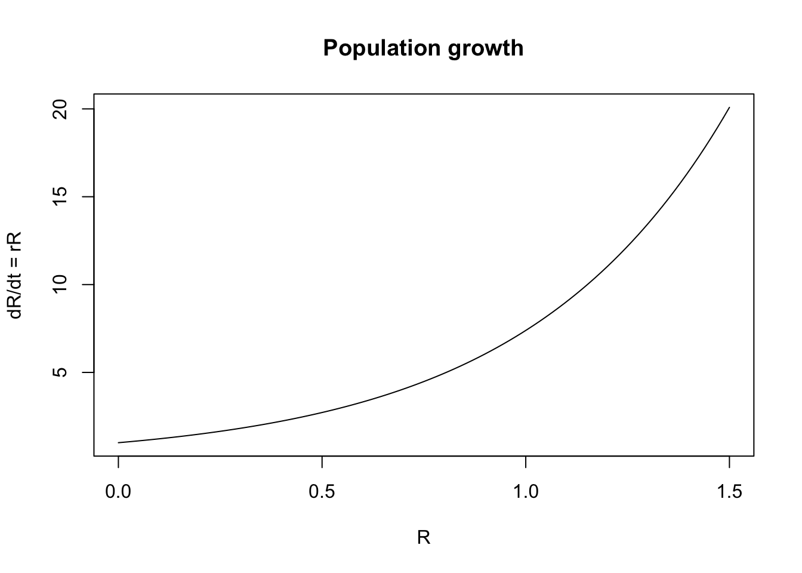
<p class="caption">
Figure 7.13: <em>Different types of resources can renew in different ways. An inorganic soil nutrient might renew the way we modeled it in R</em> competition, whereas a prey population might renew via exponential growth.*
</p>
</div>
<p>Under these circumstances, it is possible for our model to predict coexistence, if the two competitors have sufficiently different curvature in their growth responses <span class="citation">(Armstrong and McGehee <a href="#ref-Armstrong1980" role="doc-biblioref">1980</a>)</span>. This gives rise to the name “relative nonlinearity”.</p>
<p>Here is a sample model:
<span class="math display">\[\begin{align*}
 \frac{d P_1}{dt} &amp;= m_1\left(-1 + \alpha_1 \frac{R}{k_1 + R} \right)P_1 \\
\frac{d P_2}{dt} &amp;= m_2\left(-1 + \alpha_2 \frac{R}{k_2 + R} \right)P_2 \\
\frac{dR}{dt} &amp;= rR(1-\alpha_3 R) -  \alpha_1 P_1\frac{R}{k_1 + R}  -  \alpha_2 P_2\frac{R}{k_2 + R} 
\end{align*}\]</span></p>
<p>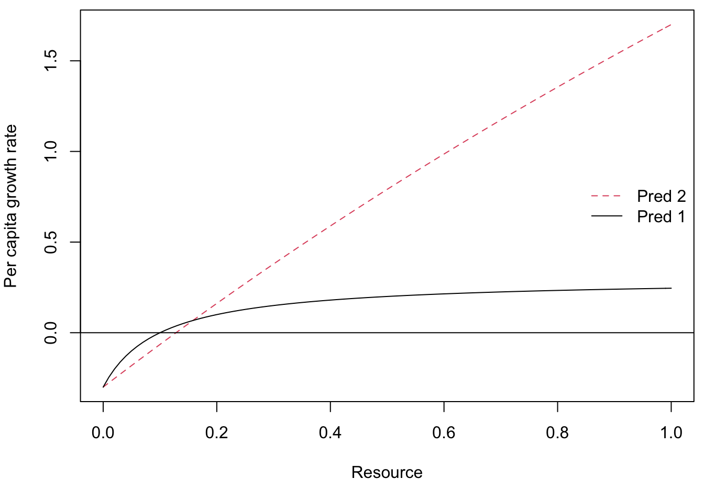</p>
<div class="figure"><span id="fig:unnamed-chunk-83"></span>
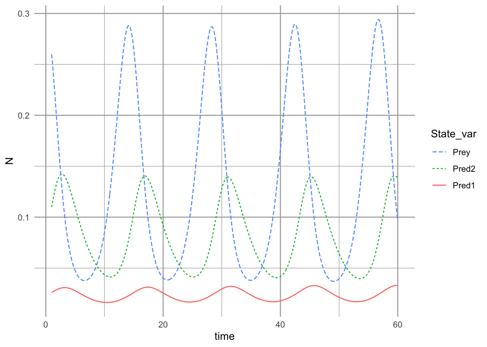
<p class="caption">
Figure 7.14: <em>The type of fixed oscillations possible given a self-reproducing resource and consumers with whose nonlinear growth rates differ in their curvature. The parameters are the same as in the previous figure.</em>
</p>
</div>
</div>
<div id="competition-for-two-resources-the-resource-ratio-model" class="section level3">
<h3><span class="header-section-number">7.5.3</span> Competition for two resources: the resource ratio model</h3>
<p>The <span class="math inline">\(R^*\)</span> model predicts no coexistence, and relative nonlinearity works with only a biotic resource. <span class="citation">Tilman (<a href="#ref-Tilman1982" role="doc-biblioref">1982</a>)</span> proposed the <em>resource ratio model</em>, that uses two resources with two or more competitors. In this model, what determines competitive outcomes are the ratios of the</p>
<ul>
<li>supply rates of the two resources, and the</li>
<li>uptake rates of each species.</li>
</ul>
<p>Coefficients reflect resource <span class="math inline">\(i\)</span> and species <span class="math inline">\(j\)</span>.</p>
<p><span class="math display">\[ \frac{1}{R_1}\frac{dR_1}{dt} = a_1\left(S_1-R_1\right) - \left( dN_1/dt + m_1 \right) / e_{11} - \left( dN_2/dt + m_2 \right) /e_{12}  \]</span></p>
<p><span class="math display">\[ \frac{1}{R_2}\frac{dR_2}{dt} = a_2\left(S_2-R_2\right) - \left( dN_1/dt + m_1 \right) / e_{21} - \left( dN_2/dt - m_2 \right) /e_{22} \]</span></p>
<p><span class="math display">\[ \frac{1}{N_1}\frac{ dN_1 }{dt} = r_1 \,\mathrm{MIN}\left(c_{11}\frac{R_1}{k_{11} + R_1} \, , \, c_{21}\frac{R_2}{k_{21} + R_1}\right) - m_1\]</span></p>
<p><span class="math display">\[ \frac{1}{N_2}\frac{ dN_2 }{dt} = r_2 \,\mathrm{MIN}\left(c_{12}\frac{R_1}{k_{12} + R_1} \, , \, c_{22}\frac{R_2}{k_{22} + R_1}\right) - m_2\]</span></p>
<p>This model might be used to represent algae competing for nitrogen and phosphorus. In our description below, we’ll use the example of eastern red cedar (<em>Juniperus virginiana</em>) and red maple competing for nitrogen and light.</p>
Here we present one of the cases proposed by Tilman, in which resources are not <em>substitutable</em>. This means that getting more of one doesn’t help compensate for a shortage of the other. This is reflected in the zero net growth isoclines (ZNGI) in Fig. <a href="#figrrsp1"><strong>??</strong></a>. Each ZNGI is perpendicular to the relevant resource axis. For instance, the ZNGI for light is flat; it doesn’t matter how much nitrogen maple gets, its minimum light requirement remains the same.
<div class="figure"><span id="fig:rrsp1"></span>

<p class="caption">
Figure 7.15: <em>Two resources, and the zero net growth isoclines for two competing species. These show that maple has a higher minimum requirement for nitrogen than for light, and the reverse for juniper. The arrows show how each species consumes the two resources simultaneously—they are the ‘consumption vectors’. Their direction shows how maple and juniper drive down light and nitrogen levels. The different slopes show us that us that each species consumes the two resources at different rates. Maple consumes twice as much light as nitrogen, and reverse for juniper. The units are arbitrary.</em>
</p>
</div>
<p>If we put these species on the same graph, we get Fig. <a href="competition.html#fig:rrstable">7.16</a>. Here we see what happens to light and N levels when both species are driving down resource levels at the same time: their consumption vectors sum so that the slope of the combined vector (grey) is intermediate between the two different species consumption vectors (black or dashed).</p>
<p>Fig. <a href="competition.html#fig:rrstable">7.16</a> helps illustrate three different environments: high light, low nitrogen (B), intermediate levels of both (A), and low light, high nitrogen (C). When both resources are supplied at intermediate rates (A), the juniper and maple drive down light and N until these resources limit both species simultaneously and the coexist.</p>
<p>If light is supplied at a much higher rate (B), the high light levels favor juniper because juniper can do very well if it gets lots of light. This illustrates a key insight from resource competition theory. Juniper succeeds in a high light envornment precisely it is a good competitor for resources <em>other than light</em>. In this example, juniper is <em>not</em> a good competitor for light. Light is supplied at a high rate. All species have enough light. The species that succeeds is the one that competes well for what is in shorter supply. To repeat that idea: the species that succeeds in a resource rich environment is <em>not</em> a good competitor for that resource. Instead, it is released from limitation by that resource. It may be a good competitor for some resource that <em>is</em> in short supply.</p>
<div class="figure"><span id="fig:rrstable"></span>
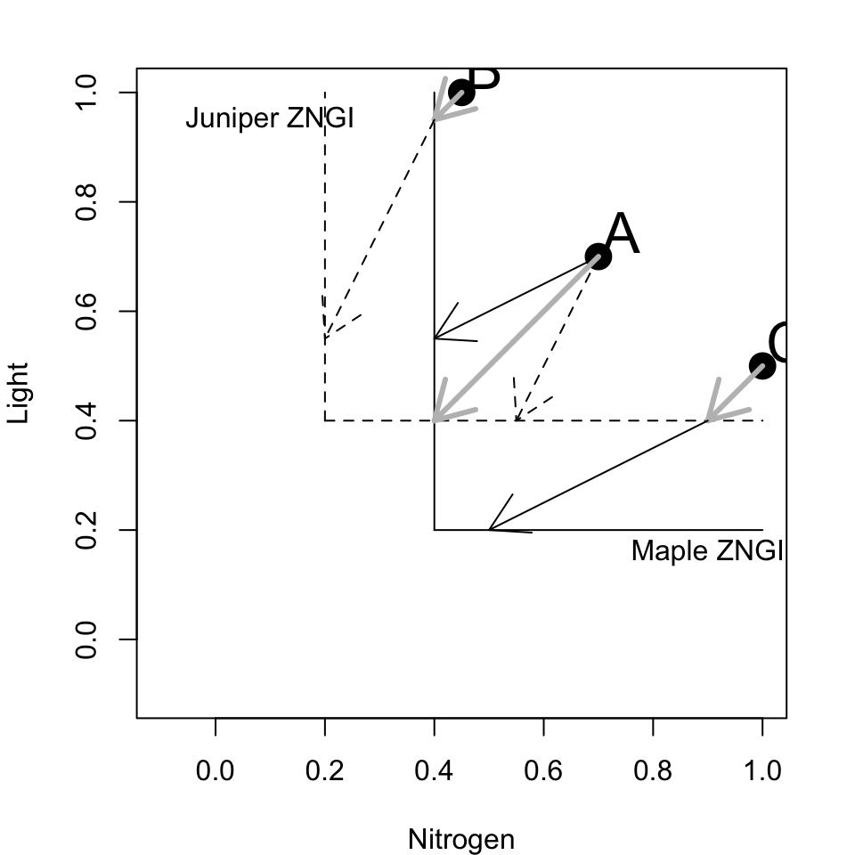
<p class="caption">
Figure 7.16: <em>Two resources, and the zero net growth isoclines for two competing species. This figure merely combines the two previous figures. As above, each species consumes more of the resource for which they have a higher requirement. A-C illustrate different resource supply rates. A, Light and nitrogen are supplied at equal rates. B, Light is supplied at a higher rate than nitrogen. C, Nitrogen is supplied at a higher rate than light.</em>
</p>
</div>
<p>In contrast to the above scenario, species will not coexist if they consume more of the resource that is less limiting and less of the resource that is more limiting (Fig. <a href="competition.html#fig:rrunstable">7.17</a>). <span class="math inline">\(\frac{R_{2,i}^*}{R_{1,i}^*}\)</span></p>
<div class="figure"><span id="fig:rrunstable"></span>
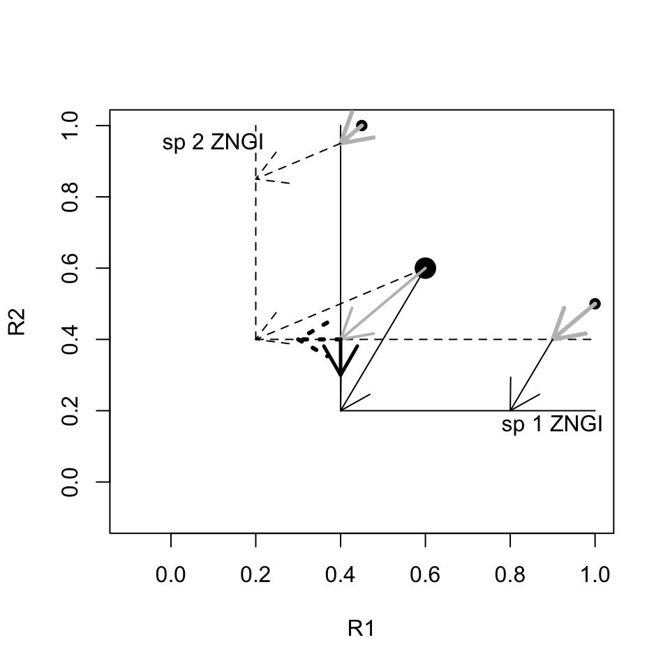
<p class="caption">
Figure 7.17: <em>What happens with greedy species. When species consume more of the resource for which they have lower reuirements, theory predicts competitive exclusion, where the outcome is determined by initial abundances.</em>
</p>
</div>
<div class="sourceCode" id="cb227"><pre class="sourceCode r"><code class="sourceCode r"><span id="cb227-1"><a href="competition.html#cb227-1"></a>resratio &lt;-<span class="st"> </span><span class="cf">function</span>(t, y, parameters){</span>
<span id="cb227-2"><a href="competition.html#cb227-2"></a>  R1 &lt;-<span class="st"> </span>y[<span class="dv">1</span>]; R2 &lt;-<span class="st"> </span>y[<span class="dv">2</span>]; N1 &lt;-<span class="st"> </span>y[<span class="dv">3</span>] ; N2 &lt;-<span class="st"> </span>y[<span class="dv">4</span>] ;</span>
<span id="cb227-3"><a href="competition.html#cb227-3"></a>  <span class="kw">with</span>(<span class="kw">as.list</span>(parameters), {</span>
<span id="cb227-4"><a href="competition.html#cb227-4"></a>    N1.dot &lt;-<span class="st"> </span>r1 <span class="op">*</span><span class="st"> </span>N1 <span class="op">*</span><span class="st"> </span>( <span class="kw">min</span>( <span class="kw">c</span>( c11<span class="op">*</span>R1<span class="op">/</span>(k11 <span class="op">+</span><span class="st"> </span>R1), c21<span class="op">*</span>R2<span class="op">/</span>(k21 <span class="op">+</span><span class="st"> </span>R2) ) ) <span class="op">-</span><span class="st"> </span>m1 )</span>
<span id="cb227-5"><a href="competition.html#cb227-5"></a>    N2.dot &lt;-<span class="st"> </span>r2 <span class="op">*</span><span class="st"> </span>N2 <span class="op">*</span><span class="st"> </span>( <span class="kw">min</span>( <span class="kw">c</span>( c12<span class="op">*</span>R1<span class="op">/</span>(k12 <span class="op">+</span><span class="st"> </span>R1), c22<span class="op">*</span>R2<span class="op">/</span>(k22 <span class="op">+</span><span class="st"> </span>R2) ) ) <span class="op">-</span><span class="st"> </span>m2 )</span>
<span id="cb227-6"><a href="competition.html#cb227-6"></a>    <span class="co">## R.dot must follow N.dot because we use N.dot in R.dot</span></span>
<span id="cb227-7"><a href="competition.html#cb227-7"></a>    R1.dot &lt;-<span class="st"> </span>a1 <span class="op">*</span><span class="st"> </span>(S1 <span class="op">-</span><span class="st"> </span>R1) <span class="op">-</span><span class="st"> </span>(N1.dot <span class="op">+</span><span class="st"> </span>m1<span class="op">*</span>N1)<span class="op">/</span>e11 <span class="op">-</span><span class="st"> </span>(N2.dot <span class="op">+</span><span class="st"> </span>m2<span class="op">*</span>N2)<span class="op">/</span>e12 </span>
<span id="cb227-8"><a href="competition.html#cb227-8"></a>    R2.dot &lt;-<span class="st"> </span>a2 <span class="op">*</span><span class="st"> </span>(S2 <span class="op">-</span><span class="st"> </span>R2) <span class="op">-</span><span class="st"> </span>(N1.dot <span class="op">+</span><span class="st"> </span>m1<span class="op">*</span>N1)<span class="op">/</span>e21 <span class="op">-</span><span class="st"> </span>(N2.dot <span class="op">+</span><span class="st"> </span>m2<span class="op">*</span>N2)<span class="op">/</span>e22 </span>
<span id="cb227-9"><a href="competition.html#cb227-9"></a>    <span class="kw">return</span>( <span class="kw">list</span>(<span class="kw">c</span>(R1.dot, R2.dot, N1.dot, N2.dot)) )</span>
<span id="cb227-10"><a href="competition.html#cb227-10"></a>  } )</span>
<span id="cb227-11"><a href="competition.html#cb227-11"></a>}</span></code></pre></div>
<div class="figure">
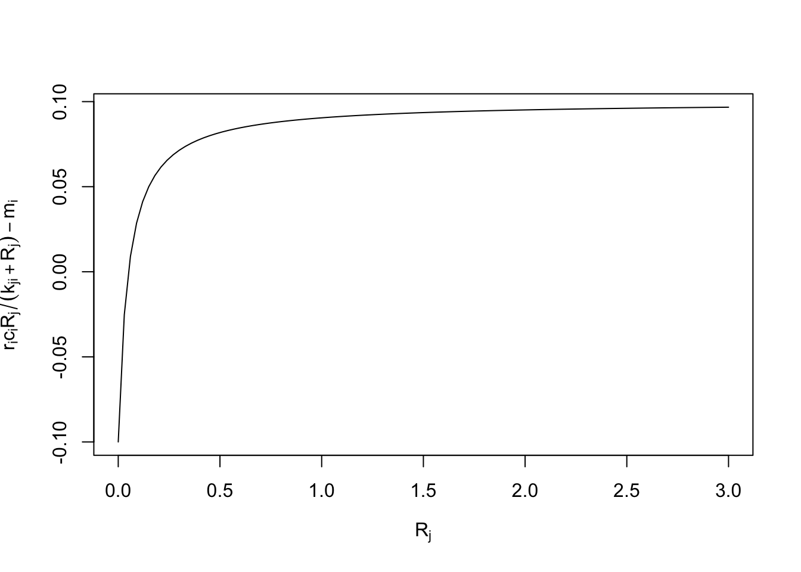
<p class="caption">
(#fig:pcgr.RR)<em>Per capita growth rate.</em>
</p>
</div>
<div class="figure"><span id="fig:rode2"></span>
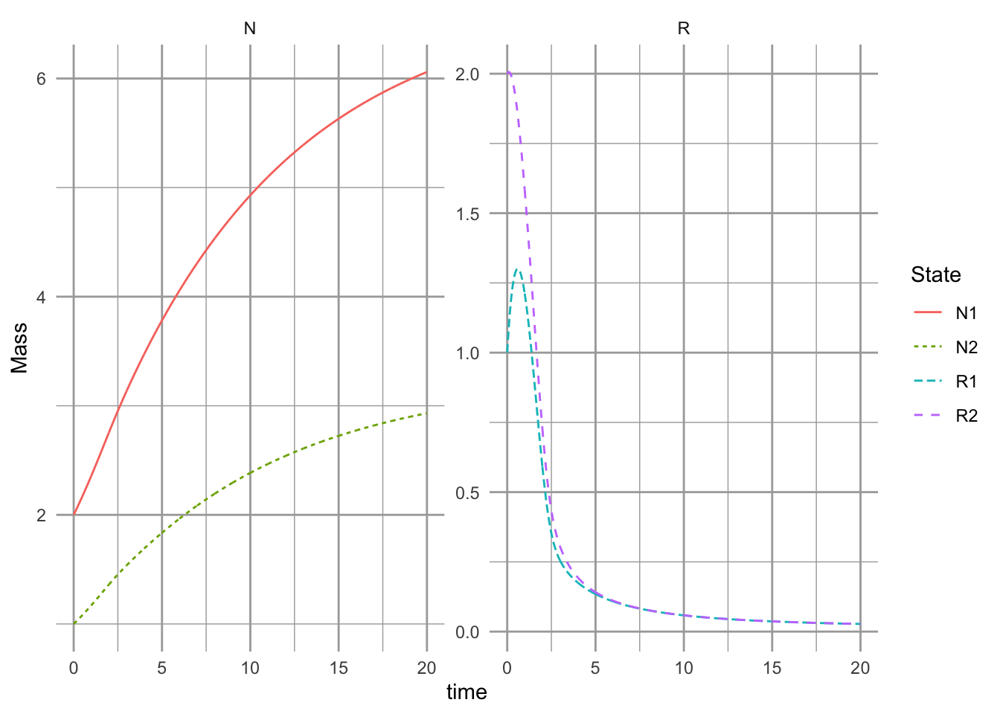
<p class="caption">
Figure 7.18: <em>Dynamics of competing species and the resources that they consume.</em>
</p>
</div>
<div style="page-break-after: always;"></div>
</div>
</div>
<div id="summary" class="section level2">
<h2><span class="header-section-number">7.6</span> Summary</h2>
<p>This chapter has provided several useful results.</p>
<ul>
<li>We can represent species effects on each other in precisely the same way we represented their effects on themselves.</li>
<li>Considering only two species, species <span class="math inline">\(i\)</span> can invade species <span class="math inline">\(j\)</span> when the effect of species <span class="math inline">\(j\)</span> on species <span class="math inline">\(i\)</span> is less than its effect of species <span class="math inline">\(j\)</span> on itself.</li>
<li>Two species coexist stably when their effects on each other are smaller than their effects on themselves.</li>
<li>The dominant eigenvalue of the Jacobian matrix (perturbation growth rate), and its negative inverse, return time, are useful mathematical definitions of stability.</li>
<li>Perturbation growth rate decreases as <span class="math inline">\(\beta_{ij},\, \beta_{ji}\)</span> decrease, and are either both less than one or both greater than 1 (<span class="math inline">\(\beta_{ij} = \alpha_{ij}/\alpha_{jj}\)</span>).</li>
<li>The magnitude of perturbation growth rate increases with <span class="math inline">\(r\)</span>.</li>
</ul>

</div>
</div>
<h3> References</h3>
<div id="refs" class="references">
<div id="ref-Armstrong1980">
<p>Armstrong, R A, and R McGehee. 1980. “Competitive exclusion.” <em>The American Naturalist</em> 115: 151–70.</p>
</div>
<div id="ref-Bolker2003a">
<p>Bolker, B M, S W Pacala, and C Neuhauser. 2003. “Spatial dynamics in model plant communities: {W}hat do we really know?” <em>American Naturalist</em> 162: 135–48.</p>
</div>
<div id="ref-Hastings2004a">
<p>Hastings, A. 2004. “Transients: the key to long-term ecological understanding?” <em>Trends in Ecology and Evolution</em> 19: 39–45.</p>
</div>
<div id="ref-Kingsland:1985kx">
<p>Kingsland, S E. 1985. <em>Modeling Nature</em>. Chicago: University of Chicago Press.</p>
</div>
<div id="ref-Morin1999a">
<p>Morin, P J. 1999. <em>Community {E}cology</em>. Malden, MA: Blackwell Science, Inc.</p>
</div>
<div id="ref-Roughgarden1998">
<p>Roughgarden, J. 1998. <em>Primer of {E}cological {T}heory</em>. Upper Saddle River, NJ, USA: Prentice-Hall, Inc.</p>
</div>
<div id="ref-Tilman1982">
<p>Tilman, D. 1982. <em>Resource {C}ompetition and {C}ommunity {S}tructure</em>. Monographs in Population Biology. Princeton, NJ: Princeton University Press.</p>
</div>
</div>
<div class="footnotes">
<hr />
<ol start="43">
<li id="fn43"><p>Ecologists who study invasion of exotic species may use the word “invade” to mean the successful dispersal to, establishment and spread at a site. This incorporates a tremendous amount of species- or system-specific biology. Here we mean “invasion” in only a much more strict or narrow sense — to increase when rare.<a href="competition.html#fnref43" class="footnote-back">↩︎</a></p></li>
<li id="fn44"><p>The topography of mountain ranges can include saddles, which are precisely the context in which we use “saddle” here. Search the web for Saddleback Mountain, New York, USA, Lat/Long: 44<span class="math inline">\(^\circ\)</span> 8’ N; 73<span class="math inline">\(^\circ\)</span> 53’ W. See also pictures of horse saddles — same shape.<a href="competition.html#fnref44" class="footnote-back">↩︎</a></p></li>
<li id="fn45"><p>Recall that the time derivative, <span class="math inline">\(d N / d t\)</span>, can be symbolized with <span class="math inline">\(\dot{N}\)</span> (“n-dot”).<a href="competition.html#fnref45" class="footnote-back">↩︎</a></p></li>
<li id="fn46"><p>PDEs are typically written using a fancy symbol, delta, as in <span class="math inline">\(\partial F/\partial N\)</span>. It helps alert us to the fact that we are differentiating one variable with respect to another state variables. When taking a derivative with respect to <span class="math inline">\(X\)</span>, we treat all other variables as constants.<a href="competition.html#fnref46" class="footnote-back">↩︎</a></p></li>
<li id="fn47"><p>This criterion is different than for demographic, discrete time projection matrices.<a href="competition.html#fnref47" class="footnote-back">↩︎</a></p></li>
<li id="fn48"><p>The magnitude or absolute value of a complex number <span class="math inline">\(|a+bi|\)</span> = <span class="math inline">\(\sqrt{a^2 + b^2}\)</span>.<a href="competition.html#fnref48" class="footnote-back">↩︎</a></p></li>
<li id="fn49"><p>This fraction is about 63% or <span class="math inline">\(1/e\)</span>; thus the hypothetical initial perturbation <span class="math inline">\(x_0\)</span> shrinks to <span class="math inline">\(0.37x_0\)</span>.<a href="competition.html#fnref49" class="footnote-back">↩︎</a></p></li>
</ol>
</div>
            </section>

          </div>
        </div>
      </div>
<a href="meta.html" class="navigation navigation-prev " aria-label="Previous page"><i class="fa fa-angle-left"></i></a>
<a href="mutualisms.html" class="navigation navigation-next " aria-label="Next page"><i class="fa fa-angle-right"></i></a>
    </div>
  </div>
<script src="libs/gitbook-2.6.7/js/app.min.js"></script>
<script src="libs/gitbook-2.6.7/js/lunr.js"></script>
<script src="libs/gitbook-2.6.7/js/clipboard.min.js"></script>
<script src="libs/gitbook-2.6.7/js/plugin-search.js"></script>
<script src="libs/gitbook-2.6.7/js/plugin-sharing.js"></script>
<script src="libs/gitbook-2.6.7/js/plugin-fontsettings.js"></script>
<script src="libs/gitbook-2.6.7/js/plugin-bookdown.js"></script>
<script src="libs/gitbook-2.6.7/js/jquery.highlight.js"></script>
<script src="libs/gitbook-2.6.7/js/plugin-clipboard.js"></script>
<script>
gitbook.require(["gitbook"], function(gitbook) {
gitbook.start({
"sharing": {
"github": false,
"facebook": true,
"twitter": true,
"linkedin": false,
"weibo": false,
"instapaper": false,
"vk": false,
"all": ["facebook", "twitter", "linkedin", "weibo", "instapaper"]
},
"fontsettings": {
"theme": "white",
"family": "sans",
"size": 2
},
"edit": {
"link": null,
"text": null
},
"history": {
"link": null,
"text": null
},
"view": {
"link": null,
"text": null
},
"download": ["_main.pdf"],
"toc": {
"collapse": "subsection"
}
});
});
</script>

<!-- dynamically load mathjax for compatibility with self-contained -->
<script>
  (function () {
    var script = document.createElement("script");
    script.type = "text/javascript";
    var src = "true";
    if (src === "" || src === "true") src = "https://mathjax.rstudio.com/latest/MathJax.js?config=TeX-MML-AM_CHTML";
    if (location.protocol !== "file:")
      if (/^https?:/.test(src))
        src = src.replace(/^https?:/, '');
    script.src = src;
    document.getElementsByTagName("head")[0].appendChild(script);
  })();
</script>
</body>

</html>
